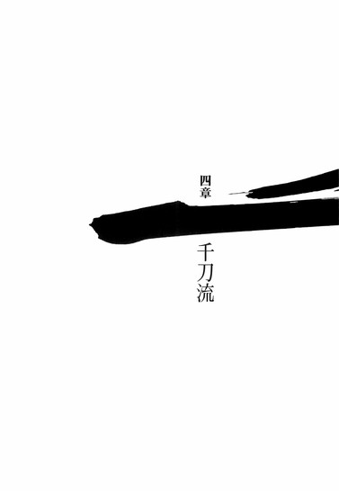

| [西尾維新] 刀語03 | |
| 西尾維新 | |
| (2015) | |
|
刀語 第三話 千刀・ツルギ
西尾維新
|
底本データ
一頁16行 一行42文字 段組１段
「ツルギ」、以後「ツルギ」に置換え注略。
「俺は刀だからな──。とがめ以外のためには、心も体も、動かないさ」
無刀の剣士・鑢七花と野心を秘めた
奇策士・とがめは、出雲の国は
三途神社へ辿り着く！
伝説の刀鍛冶・四季崎記紀が完成させた
〝刀〟は十二本──残るは十本！
〝千本で一本〟なる千刀・ツルギの秘密とは!?
刀語、第三話の対戦相手は、
三途神社を束ねる敦賀迷彩！
序章
■ ■
「この歴史は間違っているんだよ」
そう言ったのは誰だったろう。
わからない。
誰がそう言ったのか。
いっそう言われたのか。
思い出せない。
否──そもそも、憶えていない。
「本来あるべき歴史と、まるで違う──間違っている。一ヵ所たりとも真実と整合している部分が存在しない。でたらめづくしだ。間違っている」
淡々と続く。
淡々と──しかし、むしろ炎々と。
静かながら、燃え上がるような思念を込めて。
延々と続く。
「間違っている──これは本来、ありえない歴史なんだ。あるべき姿と全然異なる──こうじゃない。こうじゃないんだ」
違う。
間違い。
異なる。
のべつ幕なしにそう並べる声には、迷いはない。
躊躇もない。
「■■■」
呼びかけられた──らしい。
だが、何と呼びかけられたのだろう？
わからない。
それは──捨てた名前だ。
もう名乗ることのない、昔の名前。
捨てた過去の、どうでもいい一部分だ。
「問題は、間違っているなりに、この歴史はこの歴史で安定しているということなんだ──■■■。至極正しく、安定してしまっている。穏やかな水面のように──その上を歩けるのではないかと錯覚するくらい、穏やかな水面のように、均衡を保って、形成されている」
実際には、氷も張っていないのに。
歩けば沈むだけなのに。
憂鬱そうに──そう言った。
だから誰だ。
あなたは一体──誰なんだ。
わたしはあなたを──知らないはずだ。
「■■■、そもそも歴史とは何だと思う？」
知らないあなたは、わたしに問いかける。
わたしは答えない。
答えようという気も起こらない。
わからないからではない──わからないけれど。
ただ、それでも、わかっている。
これは──記憶だ。
思い出せないし、憶えていないけれど──これは、ただの場面回想だ。答えるも答えないもない──しょせん、ただの思い出に過ぎない。
ならばそれは。
わたしが捨てたものではないか。
音にもならない、名前同様。
黒く塗り潰された──わたしの記憶だ。
「いい答だ」
そう言われた。
思い出の中のわたしは──何と答えたのだろう。
それも──思い出だ。
捨てた思い出だ。
いい答？
「じゃあ、僕の考えも聞いてもらえるかな。■■■──歴史とは、人間の生きた証なんだよ。せいいっぱい生きた、人間の証なんだ。だから──」
優しげな声音だった。
だけれど、その反面、わかる。
わたしにはわかる。
あなたが──とても怒っていることが。
「あるべき姿で、あるべきなんだ」
力強く、そう言う。
決意に溢れた台詞だった。
「だから、■■■」
あなたは言う。
「僕は、この水面に、波風を立ててみようと思う」
ものは試しだ──と、あなたは続けた。
試し？
そんな、いちかばちかみたいなことで──否、十中八九みたいなことで──否々、万が一みたいなことで──あなたは命を捨てようと言うのか。
そうだ。
あなたは、わかっていたはずだ。
あなたには、わかっていたはずだ。
敵うはずがないということを。
叶うはずがないということを。
誰よりもよくわかっていたはずなのに──なのにあなたは。
「穏やかな水面に、一石投じてみようと思う──波紋を広げてみようと思う。どれだけ安定していようと、水面があくまでも水でしかないことを証明しようと思う」
その結果。
どれだけの人が死ぬと思う。
敵とする者だけではない。
あなたの味方が──どれだけ死ぬ。
あなたの身内が──どれだけ死ぬ。
それだって。
あなたは──わかっていたはずなのに。
わからない、とあなたは言った。
「その結果──何が起こるか、僕にはわからない。わからない──何も起こらないかもしれない。何も変わらないかもしれない。無駄なあがきなのかもしれない。僕もまた、間違った歴史の一部分だ──ゆえに、間違いを正すというのは、容易なことではないんだ。けれど、それでも、最低限、間違いを間違いだと、示すことくらいはできるだろう」
間違いを正せずとも。
間違いを示せばよいと。
そう言うのか。
「■■■」
改めて──あなたは、わたしの名を呼んだ。
そして繰り返した。
自分自身に言い聞かせるように。そうしなければ──自分自身すら、何らかの大きなうねりに飲み込まれるとでも、言うように。
「この歴史は間違っている」
けれど、やっぱり。
わたしはそれを、忘れている。
■ ■
──とまあ、思わせぶりな回想もそこそこに。
今回の刀集めは出雲編。
出雲と言えば巫女、巫女と言えば出雲！
きっと出雲には巫女しかいないはずだ！
〈切った張ったの大騒ぎ、ただし張り絵〉みたいなっ!?
水準外の漢字をそんなに使いたいのか！
血も涙もない笑いあり！
奇態失態時代劇！
刀語の第三巻♪
一章 三途神社
■ ■
出雲とは現代でいう島根県の東部にあたる。
古くから神々の集う地──とされていた。よく知られた有名な話ではあるが、陰暦において十月を意味する神無月を、出雲の国でだけは神有月と称するのはそれゆえのことである。古事記や日本書紀を紐解けば、出雲を舞台とした神話を幾つでも見つけることができるだろう。この時代──否、どんな歴史のどんな時代においても、聖地の名に相応しい土地柄である。そんな出雲のちょうど真ん中辺りに──三途神社は、堂々と建立されていた。
三途神社。
その長、敦賀迷彩の所有する千刀『ツルギ』こそが、奇策士とがめ、並びに虚刀流七代目当主鑢七花の、次に集めんとする刀である。
■ ■
「......しかし、とがめ。前に聞いたときは、うっかり聞き逃してしまったが──四季崎記紀の作りし変体刀千本、うち完成形十二本が一本の、三本目──千刀『ツルギ』っていうのは......その、ひょっとして、千本あったりするのか？」
「そうだ」
おずおずと確認するような七花の声に、とがめは揺るぎなく断言する。
「千本で一本。それが千刀だ」
「......いや、今更四季崎記紀の刀について冷静な突っ込みをいれるのも野暮ってもんだろうけどさ、それだと、完成形のほうが、習作の九百八十八本より多いってことになっちゃうんだけど......」
千刀が千本あるのなら、厳密には完成形の変体刀の数は千十一本になるのではないか。そういうことを七花は言いたかったようであるが、対するとがめはどこ吹く風で、
「確かに、野暮だな」
と、そんなことを言うのだった。
七花だってよかれと思って指摘したことなのに、その態度はあまりにもつれない。
「藪から棒、略して野暮だ」
「いや、略されてないから」
「千本で一本──それが売りである以上は、認めざるを得まいよ。既に回収した二本の変体刀には、それぞれ特徴的な主題があったろう？七花。忘れてないのであれば、言ってみよ」
「えーっと、一本目の絶刀『鉋』の場合は、決して折れも曲がりもしない頑丈さ......『硬さ』だったよな。で、二本目の斬刀『鈍』は一刀両断にできないものは世界に存在しないという切れ味......『鋭さ』だった......」
「そう」
頷くとがめ。
「そして三本目──千刀『ツルギ』は、その圧倒的な数量......『多さ』を主題に据えて作られた刀なのだ。ゆえに、千本。千本でも一本だ」
「一本でも人参みたいな言い方すんなよ......」
それこそ野暮だ。
しかし構わず、とがめは説明を続ける。
「この世に同じ刀は二本ない──と、俗に言う。まあ、それはそうだ。まったく同じ環境、まったく同じ条件、まったく同じ状況で、刀を打てるわけではない──同じ刀鍛冶が同じように手掛けたところで、出来上がるのは厳密には違う刀だ。似て非なるものだ。兄弟姉妹のようではあるだろうが──しかし、双子とまでは、とても言えまい」
「ふむ。......ん？ ってことは、なんだ」
「そう。四季崎記紀は、とにかく挑戦的な男だったらしい──負けん気が強かったというのか、不可能ごとに挑むのを好む気質だったのかもしれぬ。簡単に言えば、千刀とは、まったく同じ、千本の刀──なのだ」
材質から。
重量から。
切れ味から──何から。
「物理的に──まったく同じ」
「いつぞや、四季崎記紀は刀を消耗品とは考えていなかったのだろうとか、そなたはそんなことを言っておったが、となると、この千刀は、その例外に位置づけられるのかもしれぬな。言うならば、折れたところで曲がったところで、九百九十九本の予備が存在する、至高にして絶対の消耗品だ」
「ふむ......一般に、よい刀は手に馴染むまでに時間がかかるというからな。使っていた刀を消耗してしまい、次の刀に馴染むまでの期間は、どんな剣士にも生じる弱化の期間だ」
そんな風に、七花は聞きかじりの知識を披露する。
「しかしそれが、まったく同じ刀なら、その手間も省けるということか......慣らしの時間が不要というわけだ」
「そういうことだ。......こういう言い方もできるな。あるいは、千刀は、変体刀千本の中で、唯一の普通の刀──だと」
「普通の......、ばかげてるぜ。四季崎記紀って刀鍛冶は、普通にやろうとしてもそんな刀になっちまうのかよ」
「普遍のことを普通にできないから異常者なのだ。普通にやってもどうしたってどうしようもない異常をはらんでしまう──それが四季崎記紀だ。伝説の刀鍛冶といわれる、ゆえんだな」
「いわば、究極の平凡ってことか......消耗品であることこそが、刀の本分。だからこそ、『ツルギ』なんて、そのまんまな銘が打たれてるってことだな」
金偏に殺す。
ツルギ。
「ただまあ、消耗品といえど千本そろってこその千刀、蒐集にあたって、折ることも曲げることもならぬのはこれまでの通りだから、七花、ゆめゆめそこを勘違いするなよ」
「なるほど、了解了解。あらかじめそう言っておいてくれるなら、大丈夫だ。しかし──まあ、とがめ、千刀の特徴がそれだけだというなら、おれにとっては怖いことはないな。二本目の斬刀のときと同じだ。数が多いだけなら──おれにとってはただの刀と変わらない。刀を傷つけちゃならないという縛りがある以上、そもそも予備の出番なんかないんだから。何本あろうとも、一度に持てるのはせいぜい二本──虚刀流の二刀流対策、あんたに見せてやるさ」
「ところがことはそう簡単には運ばぬ」
とがめは言った。
「何せ今回の敵は、千人おるでな」
「はあっ!?」
と。
驚きのあまり、七花はとがめを取り落としそうになった──すんでのところで膝をたたみ、空中にあるうちにとがめを抱えなおすことができたが、とがめのほうと言えば、驚きの声もあげられないほどの恐慌を来した表情で、
「ば、ばかーっ！」
と、七花を怒鳴りつけた。
「こんなところから落ちたら死んでしまうではないか！そなたわたしを殺す気か！転がり落ちて、ふもとにつく頃には原形も残っておらんわ！」
「まあ、ここから転がり落ちて生きていられる奴は、まにわにのところの蝙蝠くらいだろうな......」
七花はとがめの金切り声にうんざりしながら──首だけで、後ろを振り返る。そこに見えるのは、七花がここまで昇ってきた、石造りの階段だった。ここまでいくつかの鳥居をくぐってきたが、既に最初の鳥居は、かすんで見えなくなっている。
数えたわけではないが──ほとんど一直線の急勾配の階段が、ここまで、およそ六百段。ようやっと、半ばを越えた辺りである。
目的地の三途神社。
その本殿に至るまで、千段の階段があるのだった。
厳密には、三途神社の建立されている出雲大山自体が、既に三途神社の敷地内とも言えたが──一般に境内と言うときには、千段昇った先、最後の鳥居をくぐったその向こう側を指すことになる。
最初、それでも、とがめは威勢がよかった。
自力で昇ると言い切った。
その決意決断が崩れたのは、昇った階段が百段を越える頃であった。この数字を早いと取るか頑張ったと取るかは賢明なる読者諸君の裁量に任せるが、しかし、少なからず自信があったらしい奇策士の、そのときの落ち込みようと言ったらなかった。運動神経は皆無と言えど、あの因幡砂漠、下酷城までを歩き切ったとがめである、単純な体力においては、多少なりとも人後に落ちないつもりがあったのだろう──ただ、平地での移動と階段での移動とでは、使用する筋肉が全然違う。ましてこの階段の急勾配は、言葉で表現しづらいものがあった。彼女が百段で音を上げたのも、むべなるかなと言ったところである。
「......七花」
息も絶え絶えな声だった。
「ごめん、無理だった、連れてって」
「..................」
弱っ！
そんな風に七花が思ったかどうかはさておいて。
「えっと......じゃあ、おぶっていけばいいのか？」
「む......そなた、そのような破廉恥な真似をわたしにしろと言うのか？」
「破廉恥？」
「男に後ろから抱きつく姿勢になるであろうが」
「ああ......それがどうした？」
「どうしたもこうしたも......身体が密着するであろう」
「それがどうした」
よくわからないという顔をする七花。
「おんぶが駄目なら肩車という手もあるが」
「ちぇりおー！」
七花の顔面を殴るとがめ。
非力なとがめのこぶしでも、さすがに顔面に当たると少しは痛みがある──しかしそれでも（七花にとってはあまりにも遅過ぎる）そのこぶしを敢えて避けないのは、鑢七花、あっぱれ忠心とでも言うべきかもしれない。あるいは精神的に被虐趣味なのかもしれない。
「肩車なんぞ余計に破廉恥だわ！ おぶうくらいならまだしも、肩車なんぞ、成人した男女のやることではない！」
「え？ おれ、島にいた頃は、姉ちゃんとよく──」
「よく？」
「......いや、なんでもない」
とがめの視線がやばめになったことをさすがに見て取って、七花は言葉を止めた。それは倫理的に見ても、やはり正しい判断だったと言えるだろう。
「じゃあ、どうしろって言うんだよ。身体が触れ合うのが破廉恥って考え方なら、あんたを連れて行くのなんて無理だぞ。自力で昇ってもらうしか......」
「ばか者。わたしは奇策士だぞ」
とがめは汗びっしょりのまま、得意げに言った。
「その程度のこと、ちゃんと妙案がある」
──で。
その妙案とやらで取った体勢が、七花がとがめを胸の前あたりで、横向きの形で下から支えるという形だった──もちろん本人たちは知るよしもないことだが、ありていに言って、それは現代におけるお姫さまだっこである。とがめが元々お姫さまの出であることを受けても、ちょっとやり過ぎみたいな絵だった。この絵を見て、彼と彼女を雇われ者と雇い主と思う者は皆無であろう。
まあ、人間ひとりを運ぶ上でもっとも腕に負担のかかる形で、五百段の階段を悠々と雑談をしながら昇ってきた七花の体力腕力には、単純に舌を巻く場面ではあろうが、ともあれ、そんな体勢から（しかも階段を眼下に六百段見ながら）取り落とされそうになって、とがめが七花を怒鳴りつけるのも、無理からぬところではあった。
ここで『ちぇりお─！』の掛け声とともに七花を殴りつけなかったのは、単に、それで今度は本当に取り落とされてしまってはまずいという計算があったからに過ぎないだろう。勘違いに基づいたその台詞は口にすれば口にするだけあとが恥ずかしいものなので、ここで一回我慢したことが彼女にとってわずかなりとも救いになればよいのだが。
──奇策士とがめが『ちぇりお』が『ちぇすと』の間違いであることに気付くまで、あと二ヵ月。
「よ......っと」
七花は、とがめの位置を調整しながら、片膝をついた状態から、立ち上がる。自分がとがめを抱えやすい位置、そしてとがめが一番楽な位置を探して体勢を調整し、それから、また階段を昇り始める。
話を戻そうとしたが、どんな話をしていたかを七花はもう忘れてしまっていた。思い出そうとしているうちに、とがめのほうから、
「『おれなら千本と数えるが』くらいのことを言ってくると思っておったのに、まったくそなたという男は。だいたい──」
と、振ってきてくれた。
ありがたいことである。
「──千刀のことはもとより、敵が千人いることも、そなたには既に話していたはずだぞ」
「ん？ そうだったか？」
「そうだ」
そうです。
第二巻の終章で、ちゃんと言ってます。
「......だとしたら、忘れていたというよりは、聞き逃していたみたいだな」
「人の話はちゃんと聞けと言っておろうに......まあ、その時点でそなたから聞き返されていたところで、わたしは何も答えられなかったであろうがな」
「機密ってやつか」
「機密ってやつだ」
「でも、その時点でってことは、とがめ、今はもう教えてくれるってことだよな？頼むぜ、本当に──敵が千人いる？確かあんた、最初に完成形変体刀の持ち主は十二人、みたいなこと、言ってなかったか？」
「言ったよ。安心しろ、これに関しては途中で設定が変わったとか、そういうことではない。当初からわかっていたことだ」
「これに関してはって......」
他にはあるのか。
途中で設定が変わったことが。
「千刀の所有者はあくまでもひとりだ──三途神社の長、敦賀迷彩」
「敦賀迷彩。聞かん名だな」
「島育ちのそなたが知っているほうがおかしいが──まあ、判明している所有者の中でも、群を抜いて無名の部類だな。なにせ、剣士ではない」
「剣士じゃないのか」
うんざりした顔になる七花。
虚刀流は、刀を使わぬ剣術と言えど、基本的には剣士を相手に想定した流派である。どちらがどうだったと較べることに本質的な意味はないが、最初の実戦だった真庭蝙蝠との戦闘、続いての宇練銀閣との戦闘、七花にとってより強く印象に残っているのは、真庭蝙蝠との戦闘のほうである。それは真庭蝙蝠が宇練銀閣よりも強かったから──ではなく、彼が剣士ならぬ忍者だったからだ。
「舞台が神社って時点で、少なからず予想してはいたがな──で？所有者がひとりなのに、なんで敵が千人なんだ？」
「言うまでもなく、迷彩が三途神社の長だからだ。三途神社は出雲でも桁違いに規模の大きな神社でな──巫女を千人から抱えておる。その巫女が全員で、それぞれ一本ずつ、刀を守っておるのだ」
「......あ、じゃあ。ここに来るまで、十何人か見た、あいつら──」
「うむ」
とがめは首肯した。
「そなたが動揺してはいかんと思ってあえて黙っておったが──そう。彼女たちが、千刀を守る、黒巫女だ」
「..................」
あいつら。
彼女たち。
出雲と言えば巫女、巫女と言えば出雲というように、出雲に這入ってから出雲大山までの道中、七花ととがめは、十幾人もの巫女を見かけていたが──そんな代名詞で通じるほど、それらの人物は異彩を放っていたのだ。
黒巫女の名の通り、黒い巫女装束に身を包んでいた。
あたかも大陸の妖怪のように、大きな白いお札で、顔を隠していた。
そして何より──帯刀していた。
では、あの刀が。
「京都からここまで、色んな連中を見てきたが、ありゃあ中でも変だったな......なるほど、あれが今回の敵か。しかしとがめ、動揺するかどうかはともかく、それは言ってくれてもよかったんじゃないか？その黒巫女ってのを、十人以上も見過ごしたってことになるぞ──言ってくれれば、既に千本のうち、十本以上は手に入ってるというのに」
「だからそなたはばかだと言うのだ」
「そうかい」
「だからそなたは個性が弱いと言うのだ」
「そ、そうかい」
「だからそなたには花がないと言うのだ」
「そ、そそ、そうかい」
言われ放題だった。
しかし何を言っても言われても、体勢がお姫さまだっこのため、いちゃついているようにしか見えないのは皮肉である。
「考えてもみろ。千本のうち、たった十何本を手に入れたところでどうなる。繰り返すが、千本そろってこその千刀なのだからな。変に刺激して、いたずらに難易度を上げる必要などない」
「それは──そうだが」
それでも、敵が千人いる状況には変わりがない。
それが途方もないことに思えても、千里の道も一歩から、まずは一本ずつ集めていくしかないのではないか──
「いいや。敵が千人いようとも、千刀の所有者はあくまでもひとり──敦賀迷彩、ただひとりだ。ならばそのひとりと交渉をすれば、道は拓ける」
「うーん......交渉ねえ」
「なんだ？ それともそなたは、千人を相手に勝ち抜ける自信があるとでもいうのか？」
「まあ、そりゃ、ないが」
斬刀の所有者だった宇練銀閣の先祖、宇練金閣は、旧将軍の刀狩りに際して、一万人斬りを達成したと伝えられるが──戦国の世ならいざ知らず、ぬるい太平の尾張時代を生きる七花としては、千人というのはどう考えても想定外の数字である。自信がある自信がない以前の話として、そもそも千人というその前提条件が呑み込めない。
ただし。
それはともかくとして、七花はとがめの交渉能力にちょっとばかりの疑問を持っているのだった。七花を雇うときのことを考えてもそうだし、宇練銀閣のときも、とがめは交渉自体には失敗している。それに加えて、とがめは七花の前に雇っていた二人の人物──真庭忍軍十二頭領が一人、真庭蝙蝠と、日本最強の剣士、錆白兵にも、手痛い裏切りを食らっているのだ。
知恵が回ること自体は認めるが──七花も島から本土にわたって多少は世間を知り、とがめくらいの若さで、そして女性で、将軍家直轄預奉所、軍所総監督という身分にあることのとんでもなさは、理解した──如何せん、実戦においては、その知恵が空回りしているような印象を受けるのだ。
大局を指揮するのを本分とする軍所軍師であるがゆえに、個人個人と接することになる小さな状況は、案外不慣れなのかもしれない。そう思う。
そんな思いを読んだように、
「失礼なことを考えているようだな」
と、とがめは言う。
「だが、安心しろ。今回は宇練のときとは違って、勝算のある交渉だ」
「そうなのか？」
「三本目だからな──こちらには、絶刀と斬刀が、既にある。だから」
「だから」
「だから──交渉が可能だ」
不敵に笑ってそう言い切るとがめに、七花はそれ以上の追及をしなかった。交渉云々に関してはとがめの領分だと割り切っているのもあるし、まだ自分には空回りするだけの知恵すらもないという自覚もある。大男総身に知恵が回りかね──その言葉を文字通りに体現しているのが、鑢七花という若者なのだった。小男の総身の知恵も知れたもの──とも言うが、とがめは女性なので、この言葉は当たらない。
「そうでなくとも、三途神社は組織だからな。話は通じやすい」
「組織ね。幕府とゆかりがあったりするのか？」
「？ なぜそう思う」
「いや、神社だの寺だのは、幕府の何とかって部署に管理されているって、どっかで聞いたような気がするんだが......寺社奉行だっけ？」
「ふむ。そなたにしてはよく知っておったと褒めてやろう。よしよし」
そう言って、手を伸ばして七花の頭を撫でるとがめ。
彼女にしてみれば、単に七花を小ばかにしているだけの態度なのだが、やはりお姫さまだっこの体勢では、いちゃついているようにしか見えない。どう考えても、これから神社に臨もうと聖なる階段を昇る者たちの態度ではなかった。
ちなみに七花は頭を撫でられて純粋に嬉しそうだった。
単純な男なのだ。
「おおかた、刀大仏のことを聞いているときにでも、そんな話が混じっていたのであろうな」
「ん。ああ、そうかも」
刀大仏──土佐は鞘走山、清涼院護剣寺の刀大仏。
現在の幕府が成立する直前、戦国の世を制して天下を統一した旧将軍──むろん、『旧』というのは、今から見た言い方だが──の発令した刀狩令によって集められた十万本の刀からなる、巨大な大仏である。むろん、大仏建立などは刀狩令の表向きの理由であり、旧将軍の真の目的は、戦国を裏から支配したと言われる、四季崎記紀の変体刀千本、その全てを蒐集することにあったのだが──
あれから百幾十年。
その際、旧将軍ですら集め切れなかった十二本を、今、奇策士とがめは集めんとしているわけだ。
よって島育ち、世間知らず、宗旨など持っているわけもない七花も、そこが剣士にとって聖地のような場所であるということもあいまって、清涼院護剣寺には多少の興味を持って、旅の道程の中、わずかばかりの、記憶に残る程度の見聞をしていたということである。
「まあ、寺社奉行が管理しておるというのは、その通りなのだが──一筋縄ではいかんよ。寺ならともかく、神社だからな」
「ん？ 似たようなもんだろ？ そんなの。どちらにしたって宗教なんだから」
「そなたから見ればそうかもしれんが......うーむ。どう説明したらいいか──いや、これは別に説明する必要のあることでも、ないのだが」
それでも、ととがめは言う。
一応、根本的な仕組みだけは言っておくべきだと思ったらしい。
「そなたは今、宗教とひとくくりにしたが......仏教。あるいは、現在はこの国において信仰が禁止されておる耶蘇教。その二つと並べて世界三大宗教に位置づけられる回教も、大陸の儒教もまたそうなのだが......ほぼ例外なくわたしたちが宗教というとき、それが『教え』であるのに対し──本国における神道が『教え』ではなく『道』であることを、少し見直してみるがよい」
「............？」
教え。
道。
七花には──その違いはよくわからない。
最初からまともな理解は期待していなかったようで、とがめは、七花の返答を待たずに、まとめにかかる。
「要するに、幕府と言えど、神社のやることには口を出しにくいところがあってな──ましてここは、神々の集う地、出雲だ。治外法権──いや、もはや自治区と言ってもよいかもしれん」
「そうなのかよ」
「そうなのだよ。そうでなければ、組織であろうがなかろうが、力ずくで千刀を提出させておるわ。それが可能な所有者ではないからこその刀集めの旅だ」
「ふうん。そういや、旧将軍時代の刀狩りの際は、どうだったんだ？当時は所有者は、やっぱり三途神社の長だったのか？宇練んときみたく、敦賀迷彩の先祖とか──」
「いや、そうではない。詳しい経緯は不明だが、刀の所有者であった敦賀迷彩が、三途神社の跡を継いだという形らしい。......まあ、三途神社は、出雲の中でも規模が大きい割に本流を外れた気風の神社ではあるのだが──武装神社になったのは、それ以降のことだな」
「武装神社ねえ......まあ、本流を外れているっていうのは、巫女の格好を見較べれば、よくわかるが。他の巫女と較べて、あの黒い衣装は明らかに異彩を放っていたし」
「うむ。三途神社の特性については、おいおい説明する......と言うより、実際に体感してもらってこそわかることだろうから多くは語らぬが、まあ、ともあれ、交渉についてはわたしに任せておけ。千人の巫女がいたところで──最悪でもそなたと迷彩、一対一の戦闘に、持ち込んでみせよう」
「それが最悪か」
「戦闘を回避できればそれが一番よいのだがな──ただ、それができれば苦労しないのも、確かな話だ──宇練のときもそうだった。四季崎の刀の毒──半端ではない」
「まあわかるけど、無理はすんなって、おれは言いたいね。戦闘をすべて回避できるようなら、はなっからおれのいる意味がなくなってしまう。千人相手に戦うなんてやっぱおれは想像もできないけど、あんたがやれって言ったら、おれはやるんだからさ」
「..................」
こともなげに口にされた七花の言葉。それを無私の忠義の表れと受け取り、あるいはとがめは、ここで感動してもよかったのかもしれない──しかし、七花のその台詞に対して、とがめが抱いたのは、感動とはまったく趣を異にする感情だった。
やれと言ったら、やる。
七花のその言葉に、嘘やはったりはない。事実、その通りに──七花はここまで、真庭蝙蝠と宇練銀閣を破っている。とがめに言われるがままに、だ。
ただし、破っている、倒した、と言えば聞こえはよいが──やっていることは、幕府という権力を後ろ盾にした人殺しに過ぎない。
刃傷沙汰を演じているのだ。
それでも、真庭蝙蝠の場合は、ある程度、正当防衛的な要素を含んではいた──しかし、先月の宇練銀閣の場合は、どうだったろう。彼は悪人で、悪党で、悪役だった──だからと言って、彼の所有する刀を奪うために彼の命まで奪うなどという行為が許されるのだろうか？
やれと言ったのはとがめである。
彼女はこの刀集めが、権力を背景にした強盗にも似た行為であることも承知している。だからこそ彼女は交渉にこだわる──ほとんど無意味だとわかっている交渉を行なう。戦闘をすべて回避することができるわけがないことなど、誰に言われるまでもなくわかりきっている──それでも交渉する。斬刀のときだけではない、かつて真庭蝙蝠と共に絶刀を入手したときも、錆白兵と薄刀を入手したときも、まず交渉ありきの蒐集だった。
偽善だとは思う。
間違っても、正義ではない。
それでも──定義は必要だと思うのだ。
だからこその交渉である。
野心のために、そして復讐心のために、彼女はこの刀集めを、何としても成し遂げなければならない──実際のところ、とがめの立場は、はたで見ているよりもずっと、切羽詰まっているのである。
上り詰めるところまでは上り詰めた。
これ以上の出世を望むなら、まさに奇策を打つしかないのだ。旧将軍でさえ成し遂げられなかったという、四季崎記紀の変体刀蒐集のような──不可能ごとを成し遂げざるを得ないのである。
だから。
そのために全てを犠牲にする覚悟は決めている。
これまで全てを捨ててきたように。
これからも捨て続ける覚悟を決めている。
「..................」
「んん？ なんだよ、黙っちゃって」
「いや──なんでもない」
そう、なんでもないことだ。
捨て続けるなど、なんでもない。
ただ──しかし、どうだろう。
鑢七花というこの男は、覚悟もなく、何も捨てることもなく──正義もなければ定義もなく、野心もなければ復讐心もなく。
迷いなく、蝙蝠と宇練を、斬り捨てた。
さながら──一本の刀のように。
刀は持ち主を選ぶ。
ただし──斬る相手は選ばない。
まさしく日本刀の再現、虚刀流だった。
それは頼もしくもあり、また怖くもあった。
実際のところ、とがめは心配していたのだ──島育ちで世間知らずの七花に、殺伐とした、強盗じみた戦闘行為ができるのかどうか。純朴に育った七花は、人を殺すことにためらいを覚えるのではないか──と。下酷城での宇練銀閣との戦いは、その試金石とも言えただろう──結論から言って、その試験の結果は申し分のない合格だった。
合格過ぎた。
人間味に欠けると言えるほどに、彼は迷わなかった。
そうでなくてはならない──とがめが七花の前に雇っていた真庭蝙蝠や錆白兵も、そうだった。蝙蝠も錆も、平気で、むしろ鼻歌混じりに、人を殺せるような人間だった。
しかし、それでも──彼らには、覚悟、あるいは、そういう自分になるのと引き換えに、捨てたものがあったはずだ。
七花は違う。
鑢七花は──壊れてもいない癖に、人を斬る。
普通のことをやろうとしてもどうしたって異常をはらんでしまう──それが異常者だというなら、七花は異常者ではない。普通だ。普通に笑い、普通に怒り、普通に悲しみ──普通に殺す。壊れたことを、普通にできる──とがめが刀集めの旅に雇った剣士は、そんな男だった。
個性が弱い癖に──平気で異常なことを言い、平左に異常なことをする。
たとえば、宇練銀閣との戦闘後──出雲までの道中、七花はとがめに、ふとした雑談の最中に、こう言った。
「でも、宇練が天涯孤独の身でよかったよな」
心底、そう思っている口調だった。
「あいつが死んでも、誰も悲しまないんだから」
そんな台詞を、本当に優しげに吐いた七花に──とがめは何かを言おうとしたが、しかし、何も言えなかった。
確かにそれは一面の事実をついていたのだから。
しかしそれは、つくべきでない真実である。
島育ちで世間知らず。
純朴に育ったがゆえに──逆に、倫理にも道徳にもとらわれていない。善悪の区別もない。言われ放題、言われるがまま──である。
だから本当に、とがめがやれと言えばやるだろう。
神に仕える巫女でさえ──虚刀流の技で、躊躇なく切り刻むだろう。千人を相手に勝てるかどうかはともかくとしても──やはり覚悟も何もなく、相手が剣士でなかろうと女であろうと、殺してしまうだろう。
黒巫女の正体を教えてやっても──そうするはずだ。
巫女を殺す。
しかしそれは、世間知らずの一言で片付けていいものだろうか。
それこそ、戦国の世ならばいざ知らず。
天下太平の世に、あるべき人間の姿ではない。
今回は、それでもいい。
敦賀迷彩──それに、あるいは、三途神社に仕える千人の黒巫女は、いざとなれば、幕府にとっては斬ってしまっても問題のない相手である。
彼女たちの正体は──そういうものだ。
ただ──問題があるかどうかなど、七花には関係ない。斬ったら問題のある相手でも──相手が天涯孤独でなく、悲しむ人間がどれほどいたところで──彼は斬れと言われれば、斬るだろう。
いいか悪いかで言えば、いい。
正しいか悪いかで言えば、とても悪い。
けれど、わかっていたことだ。
虚刀流がそういう流派だということは、最初から──昔から、わかっていたことだ。
なぜなら──七花の父親、今は亡き先代の虚刀流当主、鑢六枝は──そういう風にして、とがめの父親を、殺したのだから。
それゆえに──彼らは裏切らない。
蝙蝠や錆のように、とがめを裏切ったりしない。
これと決めた主を、刀は絶対に裏切らない──ゆえに。
七花の扱いには、万全を期してなお足りない──武装しないことを何よりの矜持とする奇策士にとって、虚刀流を雇うことは例外的な武装にも等しいことなのだから。それこそ普通に考えれば──七花が迷いのない一本の刀であることはとがめにとってはいい条件だ......だがそれだけに、その強力さに溺れてはならないと思う。それでは、同じだ。とがめが復讐心を抱いている連中と、何も変わらない。
だから。
迂闊なことは言えない。
たとえ七花がどうあろうとも──どのようであろうとも、とがめは覚悟をもって、ことに臨まねばならないのだから。
「......ふ」
軽く、笑う。
そんな自分を滑稽に思った、自嘲の笑み──ではなくて、単に、とがめをお姫さまだっこする七花の手が、絶妙な振動で彼女の脇腹をくすぐったからである。
「何すんじゃー！ そなたは変態かー！」
「えっ あ、なに？」
「ん......」
咄嗟に激昂したものの、ただの偶然らしい。
怒りの矛先を収める。
......三ヵ月。
七花ととがめが行動を共にするようになって既にそれだけの時間が経過しているが、七花がそういう色恋方面に関してはとんでもない朴念仁であることは、既にとがめも確信しているところである。怒りの矛先をあっさり納めたのは、それが明白だったからだ。
実はこの時点で、聡明なる奇策士はこのお姫さまだっこの体勢の恥ずかしさに気付きつつあった。肩車は論外として、これならまだおんぶのほうがよかったのではないか......どうせ厚着の身のこと、身体の感触など、七花の背中に届くわけもないというのに。ただ、自分で言い出したことだけに、今更引き下がれないというのが真相である。
対する七花のほうは、単純に、やっぱこれどう考えても抱えにくいなあ、と考えているくらいで、それは彼の体力腕力で補える程度のことなので、ほとんど何も思っていないに等しい。
どこまでもかみ合っていないお姫さまだっこだった。
「まあ、首尾よく──あんたに言わせりゃ最悪、だけれど、一対一の戦いに持ち込めたとして、どうなんだ？敦賀迷彩ってのは、どんな技を使うんだ？剣士じゃないとは言っても──迷彩もまた、剣を使うんだろう？」
「さあな、詳しいことはわからん。迷彩が無名過ぎるというのもあるが、なにせ出雲のことだからな──しかし、先ほどもそなたが言ったとおり、千刀は数が多い以外は、際立った特徴のない、ただの優れた刀だ。一対一に持ち込めば、そなたのほうが有利であろう」
「その通りだ」
だけど敵がどういう使い手なのかわからないというのは不安が残るな──と七花は言った。
「迷彩はこの神社を継ぐ前は何をしてたんだ？その辺に、何らかの取っ掛かりがあるかもしれないぞ」
「山賊だ」
「ふうん......」
あいまいな反応を返す七花。島育ちの七花は、漠然と山賊なんて言われてもぴんと来ないのかもしれない。
しかし、山賊。
元山賊である。
国を治める幕府としては──斬っていい相手、だった。
「旧将軍の刀狩令の時代から、千刀の所有者は、とある山賊衆の頭目だったのだ。代々な。その頭目もまた、どんな剣技の使い手だったかは知らんが──旧将軍が千刀を蒐集できなかったことだけは確かだ」
「ふむ。その山賊衆は、今は？」
「迷彩が神社を継いだ時点で解散──したらしい」
「山賊衆から神社務めか。どういう心境の変化なんだろうな──訊いてみたいもんだ。ああ、そう言えばさー、とがめ、確か完成形変体刀十二本の中に、双刀『鎚』ってのがあったじゃん？名前からするとその刀って、二本一組の刀っぽいんだけど──千本で一本とか出てきたあとで二本一組とか、かなりやばいよな」
「双刀についての情報はほとんどないから、『鎚』がどのような刀なのかはわからんが......上に報告書を提出しなければならぬ身としては、双刀がただの二本一組の刀でないことを祈るばかりだな」
この辺りの会話は、ただの冗談である。
七花はともかく、とがめは真面目に言っているわけではない。
「とはいえ、そんな先のことを考えても仕方があるまい。この企画、そこまで辿り着けるかどうかすら怪しいのだ。だいたい、無事千刀『ツルギ』を蒐集できたところで、その先に積み残している問題があるのだぞ？千本もの刀をどうやって尾張まで送り届けるか──それをまだ決めておらん」
「ああ、そんなことも言ってたな」
「絶刀のときも斬刀のときも知恵を絞ったものだが、今回は特に大変だ。どうしたものかな──ふむ」
思案顔をするとがめ。
どんな思案顔をしても、体勢はお姫さまだっこである。
それでも一応、とがめとしては、階段の段数が残り百段を切ったあたりで、もっともらしい理由をつけて降ろしてもらって、自分の足で階段を昇ろうと決めていた。三途神社をおとなうにあたって、いくらなんでも従者にこんなふうに抱えられたままではいかにも決まりが悪い。幕府の名を背に交渉する以上、相手方から軽んじられても困る──幸い、足のほうもだいぶん、回復してきた。
「七花。今、どれくらい来た？」
「あー？ ああ、八百段くらいかな？」
余裕がある──どころではない、まるっきり普通の表情で、とがめの問いかけに答える七花。むしろ軽い運動をして、ふもとにいたときよりも血色がよくなっているくらいであった。底なしの体力を持つ青年である。
「そうか、ならば」
と、とがめは、もう少ししたら自分の足で昇る旨を伝えようとしたが、しかし、その必要はなくなった。
幸いなことではなかったろう。
むしろ不幸な部類だった。
七花は目算で八百段くらいと言ったが──正確には八百五十段目に構えられた鳥居の下で、竹箒を手に、落ち葉を掃いている者の姿があったのだ。
黒い巫女装束。
しかし──下界で見た巫女達とは違う。
黒いのは下半身のはかままでだ。
顔面に札を貼っていない。
帯刀していない。
そして──何より、雰囲気がまるで違った。
下界の黒巫女たちと──否、ありとあらゆる人間と一線を画す、境地の一歩向こう側にいる者特有の気を、悠然と放ちながら──彼女は竹箒を操っていた。急勾配の階段ゆえに、ここまで近付かねばその影をとらえることができなかった──それだけに、彼女はまるで突然そこに現れたかのように、ふたりにとっては思われた。
それに驚き、七花は、またもとがめを取り落としかけたし──それが二度目なのがよかったのかわるかったのか、とがめは反射的に、七花の首根っこにしがみつくように、腕を回してしまった。
そんな申し開きのしようもない格好で。
彼らは刀集めの旅、第三の敵──敦賀迷彩と、遭遇したのだった。
「......ごきげんよう」
上からかけられたそんな声は。
それはそれは、もうとても、表現のしようもないくらい、冷ややかだったという。
二章 敦賀迷彩
■ ■
敦賀迷彩は長身の女性だった。
年齢は見た感じではわからない──若いようでもあるが、しかし、妙に貫禄があるようでもあった。量の多い漆黒の髪を伸ばすだけ伸ばして、二つに振り分け、縛っている。
そして黒い巫女装束。
意匠が少し違うのは、彼女が長であるゆえか。
「敦賀迷彩というのは、前にこの神社を管理していた神主の名だよ。便宜上、あたしはそれを名乗っているだけだ。前の名前？忘れたよ。確か、なかったんじゃないかな。山賊に名前はいらないから」
彼女は気さくな調子で、そう言った。
■ ■
結局、手持ち無沙汰になって、七花は適当に腰を下ろすことにした。階段を椅子に見立てることにし、先ほど昇りきったところの千段の階段、その千段目に座った。三途神社の大鳥居──階段の中途にあったそれぞれの鳥居より、更に一回り二回り大きい石造りの鳥居──の、真下に来る形だ。ごたぶんに漏れず、七花は煙と同じで高いところが好きなので、いっそこの鳥居に昇ってその上に腰掛けようかとも一瞬考えたが（それがどれほど罰当たりな行為かということに関する知識は、今のところまだ彼にはない）、千段の階段を一直線に見下ろしたその風景はそれだけで七花を十分に満足させたので、とりあえず、そこまでする必要を感じなかった。
ふと、後ろを振り返る。
千段の階段や巨大な鳥居に恥じない、立派な社が見える。手入れの行き届いた見事な権現造である。権現造とは本殿と拝殿を石の間で繋いだ別名を八棟道ともいう建築様式であると、さっきとがめが教えてくれたが、七花はもうそんなことは忘れていて、ただただ見事だと思うだけだ。それくらいの感性は彼にもある。もっとも、ごく最近まで建造物に関する知識は不承島の掘っ立て小屋が全てだった彼に見事だと褒められたところで、誰も喜びもすまいが。
奇策士とがめと、元山賊の巫女──敦賀迷彩は、今、ふたりで、ふたりきりで、その本殿の中にいる。
交渉中──だった。
「......ううむ」
むろん。
交渉の席において、七花が同席することは何の利益にもならないということはわかる──否、基本的に七花は、邪魔をすることしかできないだろう。役に立たない癖に余計な口を挟んで、話を引っ掻き回してしまうのが関の山だ。だからとがめが、「七花、そなたはその辺で遊んでおれ」と言ったのはわかる──遊ぶってひとりで何してろっていうんだよ、よりにもよってそんな言い方はないだろとは思ったものの、まあ、わかる。
ただ、脳裏を過ぎるのは先月のことである。
下酷城城主、宇練銀閣。
絶対領域を持つ、居合いの達人──
彼は交渉中に、こともあろうか、幕府の人間であるとがめを平然と斬りつけた──寸前で七花がそれに気付いてことなきを得たものの、あのときあの場に七花がいなければ、確実にとがめは、一刀両断にされていただろう。
障子紙よりも弱いと自負するとがめである。
武力を一切所持しない、奇策士。
なればこそ七花のような存在が必要なはずで、それは交渉の席においても例外ではないと思うのだが──
四季崎記紀の刀の毒。
所有すると、人を斬ってみたくなる──
──いや。
その程度のことは、とがめにだって明白だろう。七花にわかることが、とがめにわからないはずがない──それなのに、先月のことを経験しておきながら、七花を席から外したというのは、何らかの確固たる戦略あってのことなのだと思う。
──だいたい、あいつは不承島にもひとりで来ていたし──度胸のほうは折り紙つきってことだ。
七花が心配しても仕方がない。
とがめはたぶん、こうして七花とふたり、刀集めの旅をしていても──ずっと、ひとりで旅をしている気分でいるのだろう。鈍い七花にも、それくらいのことはわかる。
そして、それでいいと思う。
自分は刀だ。
鑢──虚刀流という名の、一本の日本刀だ。
重要な会議に際し、刀を腰から外すのはむしろ当然──と、七花は、不承島における交渉の際、とがめが例外的に持っていた刀を、姉の七実が預かっていたのを思い出す。先月の下酷城のときは、ならば例外だったのだ。
──確かに、違うな。
宇練銀閣と敦賀迷彩では、違う。
宇練は、いわば抜き身の刀だった──その使う剣法とは真逆に、彼自身は、鞘を失った刀のような存在だった。しかし迷彩は違う。そもそも──
──そうだ。
彼女は帯刀していなかった。
彼女が真庭蝙蝠のように、その体内に刀を収納しているのでなければ──千本ある刀の所有者でありながら、彼女はそのうちの一本すら、所持していないということである。
──毒。
あれでは刀の毒の──回りようがない。
じっさい、階段の八百五十段目から七花が今腰掛けている千段目から先、境内にいたるまで、七花ととがめは彼女と同行することになったが──お姫さまだっこを迷彩に目撃されたとがめはそのときにはすべてを諦めてしまっていて、七花に自分を降ろせとは、ついに言わなかった──すぐに身分を明かした七花ととがめに対し、まるで十年来の友人を客に迎えたときのような気さくさ、気楽さで、接してきたのだった。
「あっはっは」
なんて、快活に笑いながら。
「幕府のね──なるほどなるほど。いや、信じるよ。だって、信じたほうが面白そうじゃないかね、そういう話は──」
とがめも恐らくは、境内にいたるまでの百五十段の間に、交渉の方針を固めたのだろう。迷彩の人間性のその全てを百五十段のうちに理解できたとまでは言わないが、しかし、話の運び方を決める上では、それで十分だったのだと思う。
最悪でも──一対一に持ち込む。
そう言っていた。
──強そうには見えなかったけどな。
背が高いと言っても、それは女性にしてはという意味で──七花から見れば、やはりそれほどでもない。そんな鍛えている風にも見えなかった。もちろん、対人経験の浅い七花に、向かい合っただけで相手の強さを推し量れるような能力はないけれど──
しかし、それでも帯刀していないというのは。
帯刀していない──つまり無刀。
「神社と言っても、今はもう、形だけでね」
階段の途中で、彼女は言った。
「神官ももうひとりもいないし。あたしを含めて、この神社には巫女しかいない──仏教でいうところの尼寺みたいなものだ」
七花は迷彩に、下界で見た黒巫女たちの、奇妙な姿についてのことを触れてみた。帯刀しておらず、また顔面に札を貼っていない迷彩の姿は、言うならば本来赤いはずのはかまが黒いというだけで、そこまでおかしくはないが──その姿を見てこそ、下界で見た彼女らの奇矯さが際立つのだった。
「下だけじゃなく、上にもいるよ」
迷彩は、わざとなのかどうかはわからないが、まるではぐらかすように、七花の言葉にやや的を外した感のある台詞を返した。
「五十人ほどね。一応、武装神社ということになっているからさ──下界の警備は仕事のうちなんだ。まあ、うちの神社は抱えている人数が多過ぎるから、あたりにばらかしておかないと、溢れちゃう」
七花はなんとなく、とがめの話を聞いているうちに、千人の巫女というのは迷彩の山賊時代の仲間なのだろうと思い込んでいたが──どうも、そうではないらしい。七年前、彼女がこの神社を継いだ際──彼女は山賊稼業からはすっぱり足を洗ったという。当時の仲間とももう会っていないそうだ。
とは言え。
そうでなくとも、この神社はおかしいと七花は思う。
本流を外れている──と言っていたが。
「にゃー......」
そんな難しいことを考えたわけでもないのに、ちょっと頭がいっぱいいっぱいになってしまって、七花はごろんと、上半身を仰向けに横たえた。もしも鳥居が断頭台なら、死刑寸前という姿勢である。そんな姿勢の視界には──幾人かの巫女が入っていた。
黒巫女。
下界で見たのと、同じ姿。
全身黒衣の──巫女。
七花の人間識別能力では、同じ服を着、同じように帯刀し、同じように札を貼られた彼女たちを、とてもではないが区別することは出来ない──全員が全員、同じように見える。いや、これは七花でなくとも、大抵の者はそうだろう。札がちょうど顔を隠す形になっているし、また、髪型も全員、似たり寄ったりなのだ。
「映像化するとき簡単そうだろう」
そんな風に迷彩は言った。
七花には意味がわからなかった。
実写の場合はどうするんだ、などととがめが返していたが、その意味も七花にはわからなかった。まあ、わからなくてもいいことだろう。わかってはいけないことかもしれない。
それでも、同じように見えはしても、下界で一帯の警備にあたっている黒巫女たちよりも、この境内で働いている黒巫女たちのほうが位身分は上なのかなあと、七花は思った。
──そう言えば、もうひとつ。
雇い主であるとがめが敵とふたりきりで交渉しているということも心配ではあったが──七花には、それはそれとして（既に交渉は始まってしまっている以上、それはもうどうしようもないこととして）、もうひとつ、気にかかっていることがあった。
千刀『ツルギ』である。
境内で、なにやら仕事をしている風の黒巫女たち五十人──その全員を確認したわけではないが、まず全員が帯刀しているようで──それぞれ、腰に刀を差している。たまに、左側ではなく右側に刀を差している者もいるが、それは単に、その者が左利きということなのだと思う。
とにかく──あれが、千刀『ツルギ』。
とがめはそう言っていた。
しかし──七花には、どうもその実感がないのだった。
それもまた、先月のことである。下酷城で居眠りしていた宇練銀閣が腰に差していた、斬刀『鈍』──見た瞬間、七花はその刀が四季埼記紀の完成形変体刀が一本であると、直感できた。
確信できた。
そしてそれは──あたっていた。
なんとなくそう思ってしまったのだと、そのときには思った──早とちりなのかもしれないから、迂闊な判断は厳禁だと、そんな風に思った。
ただ、あとでとがめにそれを話すと、彼女は、ひょっとすると剣士としての七花が、四季崎記紀の刀に感じるものがあったのではないかと、そんな風に言った。
ものに魂が宿るなど、非現実的な考え方ではあるが、そんなこともあるかもしれないと七花は思っていたのだが──
──感じない。
黒巫女たちの持っている刀からは、先月覚えたような何らかの感覚を全く得ることができない──下界の黒巫女の刀もこの境内の黒巫女の刀も、等しく同じだ。
ただの刀──のように思える。
思えてしまう。
──ふむ。
暇潰しくらいの話だった。とがめはきっと、七花が振ったそんな話のことなど忘れているだろう──否、彼女の記憶力なら忘れているということはないにしても、まず間違いなく、重要な記憶には位置づけていないだろう。言われなければあえて思い出すことはあるまい。感じるものがあったんじゃないか──と言ったその台詞もまた、適当に口にしたものだったのかもしれない。
けれど、七花はそれを面白い考えだと思ったのだ。
非現実的ではあるけれど。
そんなこともあるかもしれないと七花は思っていたし──そんなことがあればいいと、そんな風にも思っていた。
ものに魂が宿る。
刀に魂が宿る──それは。
鑢七花という、一本の刀の問題でもあるのだから。
──ただ、まあ。
とがめがあそこまで確信を持って断定していたのだ、黒巫女の持つそれぞれの刀が実は変体刀ではないというような真相はあるまい。やっぱり斬刀のときの感覚は、ただの気のせい、思い込みだったのだろうと、七花は考えるのをやめた。
「よーう」
たまたま黒巫女のひとりが、七花のそばまで寄ってきたので──取り立てて七花に用があったわけではなく、単に階段を降りるために七花の脇を通り抜けようとしただけだったが──なんとなく、七花は彼女に声をかけた。あわよくば、顔面にそんな風にお札を貼ってちゃんと前が見えるのかどうかを訊こうと思ったのだが、
「............っ！」
と、彼女は身をすくませて、来た道を一目散に、戻っていった。
ぽかん、となってしまう七花。
声をかけた女の子に逃げられてしまうというのは男子ならば誰しも気持ちのよいものではないことだが、しかし七花の場合は、そんな感覚はない。ただ、そんな七花でもいぶかしく思ってしまうほどの、彼女の奇妙な態度だった。敦賀迷彩は、巫女とは言え、この神社の長だ。である以上、自分の上司の『敵』である七花を彼女が怖れるというのはわからなくもないが──それにしたって、おかしい。
──敵対的な態度、というより──
ただ、怖がられたような。
しかし、七花の何を怖れる？
七花はまだ、迷彩に対しても、自分が虚刀流であることを告げていない──だから黒巫女が自分のことを知っているわけがない。帯刀している彼女が、帯刀せず、寝転がっているだけの男の、何を怖れる？
──変な神社だ。
そもそも、巫女しかいないようでは、最初から神社としての体裁を成していない──それは迷彩自身も言っていたことだが。
京都でとがめに参拝に連れて行かれた八幡神社を、どことなく懐かしく思いながら、七花はゆっくりと目を閉じた。
眠ることにしたのだ。
起きる頃には、きっと交渉も終わっているだろう。
■ ■
導かれた先は板敷きの間だった。ここまで来る途中、本殿の廊下においても、何人かの黒巫女を見かけたが、この部屋の中には誰もいない。少なくとも迷彩は自分とふたりきりで話そうという意思はあるらしいと、とがめは安心した。彼女はわずかばかり、待ち伏せを警戒していたのだが──
──とは言え。
この女はそういう気質だ──という、そんな確信がどこかにあったので、警戒はしていても心配はしていなかったのだが。
「ふふん、と」
座布団も敷かずに、先に部屋に這入った迷彩は、あぐらをかいて座った。そして自分の前に座るよう、とがめを促す。言われるがまま、とがめは迷彩の正面に、正座をした。
「面白い髪だね、お嬢ちゃん」
迷彩はまず、そう言った。
とがめの髪は根元から白い──染めているのでも抜いているのでもなく、ある事件を切っ掛けにして、天然の白髪になったのだ。とがめの若さで総白髪というのはかなりの異彩を放つだろう。だから、それについて何かを言われることには、もう慣れている。今更何とも思わない。しかし。
「あなたにお嬢ちゃんと言われるほど、わたしは若くはない」
はっきりと、そう言った。
お姫さまだっこを見られるという醜態を既に晒している、これ以上軽く見られるわけにはいかない。幕府の人間であるということを迷彩は口では信じると言っていたが、実際はどうなのか──もしかしたら今、それを量られているのかもしれないのだ。
「お嬢ちゃんさ。あたしから見ればね」
しかし、迷彩はそう言うのだった。
「なるほど、お嬢ちゃんは見た目ほど若くはないようだが──あたしもまた、見た目通りの若さというわけではないのさ」
「......であろうな」
見た目通りも何も──七花とは違い、人間観察力には自信のあるとがめですら、敦賀迷彩の年齢はわからない。とがめや七花より年上なのは確かだろうが──しかし、どうも年齢を特定できない。推定することすら難しい。
──元山賊。
とは、とても見えない。
いや、彼女の気さくと受け取れる気風は、自由闊達放蕩無頼を売りにする、山賊のそれと通じるものがあるようではあるが──どことなく、浮世離れしている雰囲気がある。
──島育ちの世間知らず──ではないが。
千段の階段を昇った先の神社。
浮世離れ、そのものか。
ただ、武装神社として、出雲大山一帯の警備を担当している以上、まるっきりの浮世離れとは言えないだろうけれど。
「迷彩どの──」
「まあまあ、そう慌てなさんなよ──ああ、来た来た」
ともかく、本題に入ろうとしたとがめを、迷彩はやんわりと制した。何かと思えば、戸を引いて、黒巫女がひとり、部屋の中に這入ってきたのだった。手には大きなとっくりをひとつ、提げていた──彼女は何も言わずに、そのとっくりをしずしずと迷彩に渡して、そしてまた何も言わないままに、足早に部屋から出て行った。
栓を抜いて、そのとっくりから直接、がぶがぶと豪快に、酒を呑む迷彩。それから迷彩は、とがめの前に、そのとっくりを置いた。
「呑みたまえよ」
「............」
「あたしは一緒に酒を呑めん相手とは、大事な話をしないことを主義にしている」
毒など入っておらんのは見ての通りだ──と、迷彩は言った。とがめは黙ったまま、とっくりを両手で持って、一息に、とっくりの中の液体を口にした。

お神酒らしい。
酒の嫌いな神さまはいない──らしいが。
ただ、供物としてのお神酒があるのなら、三途神社、神社としてまるっきり機能していないというわけではないらしい。神主はいなくとも、最低限のことはやっているようだ。
「いい呑みっぷりだ」
「ふん」
おかしそうに言う迷彩に、とがめはとっくりをどんと音を立てて、床に置く。口元を軽くぬぐってから、
「これでいいのか」
と言った。
相変わらずの、権高な物言いだった。
交渉といっても、こびるつもりもへつらうつもりもない。
「もちろん。これであたしたちは友達だ。しかし、あの坊やを仲間はずれにするのはどうなんだろうね？彼にも関係のある話をするんじゃないのかい？あれはお嬢ちゃんの男だろう？」
「あれはわたしの刀だ」
とがめは言う。
「帯刀していない者を相手に刀を帯びて話をするのは、わたしの主義とするところではない」
「ふうん。刀ねえ」
迷彩は笑う。
......お姫さまだっこされている姿を見られておきながらそんな格好つけた台詞を言っても説得力はなかったかもしれないと、とがめは自省する。やはりあれはどう頑張っても取り戻せない失点である。
「まあ、お嬢ちゃん。正直言って話の内容というのは、既にあたしには予想がついているのさ──四季崎記紀の、変体刀のことだろう？」
千刀『ツルギ』。
四季崎記紀の完成形変体刀十二本が一本。
「......なぜ、そう思う」
「この自治区出雲にお上が口を出して来たのは、歴史上、そして事実上、一回しかないからね──言うまでもなく旧将軍の刀狩令のときのことだ」
「............」
「山賊だった頃に、そのあたりのどたばたについては、上の世代の連中からよく聞いていたよ──自慢話としてね。ばかばかしい、別にあんたらが旧将軍と戦ったわけでもあるまいに──」
迷彩は、自分の山賊時代を思い出すように目を細めてから、
「まして、あんたは軍所の総監督だって言うじゃないか。ならば用件は十中八九、千刀『ツルギ』のことだ」
と、とがめのほうを向いた。
「なんだい。また刀狩令でも出たのかい？ それにしては、ふたりでの旅路とは、ずいぶんと心もとないようだがね──」
「近いようで違うが──しかしほぼ正解と言ってよい。そこまでこちらの思惑が見え透いているようなら、かえって話は早い」
階段を昇ってくる間、こちらから探りを入れているつもりだったが、そうではなく、向こうも向こうで──もしかしても何も今に限らず、最初の段階から、とがめたちに探りを入れていたらしい。でなければここまで的確にこちらの狙いを読んではこられないだろう。
「わたしたちの目的は、ご察しのとおり刀集めだ──その旧将軍でさえ集められなかった、四季崎記紀の変体刀、完成形十二本の蒐集を役目としている」
「なんのために？」
「むろん、国家安寧のために」
「ふうん」
白々しいとがめの言葉を、白々しく受ける迷彩。
騙しあい──ばかしあいのような空気が生じた。
宇練銀閣や──あるいは不承島で、鑢家の七花と七実を相手にしたときとは全然違うと、とがめは感じていた──あたりまえだ、敦賀迷彩は千人の上に立つ組織の長なのだから。ただし、交渉相手としては、そのほうがやりやすいはずだった。
じっさいのところ、奇策士とがめは、確固たる算段があってこの交渉に臨んでいるわけではなかった──七花がそう信じているほどに、確かな戦略を持っているわけではなかった。
むしろ何も考えていなかったと言っていい。せいぜい、逆にそうでなければ交渉などできないと考えているくらいだ。
そうでなければ──対応できない。
四季崎記紀の刀の所有者は。
例外なく──壊れているはずなのだから。
どんな成り行きにでも対応できるように、構えておかなければ──
「既にわたしたちは残り十二本のうち、二本の刀を入手しておる」
「ほうっ」
ここで迷彩は初めて意外そうな顔を見せた。明らかにこちらの話に興味を持ったような素振りであった──とがめの狙い通りである。この情報は伏線として、あとからきいてくるはずだった。
とがめは続ける。
「美濃の涙磊落から絶刀『鉋』を──因幡の宇練銀閣から斬刀『鈍』を、それぞれ、蒐集しておる。あなたも千刀『ツルギ』の所有者ならば、刀の名前くらいは聞いておろう──」
「絶対の頑丈さを持つ永久機関の絶刀と、ふたつに斬れぬものがこの世に存在しないという斬刀──ああ、知っているよ。ふうん──すごいな」
素直に感心した風の迷彩だった。
「旧将軍でも集められなかった刀を、既に二本──か。大したものだ」
ちなみに美濃の涙磊落とは、絶刀『鉋』の、この時代における最初の所有者である。その磊落から、真庭蝙蝠と協力して、とがめが絶刀を得たのは事実だが──その後、蝙蝠の裏切りによって、絶刀は一度手放すことになってしまったことは、ここでは伏せておく。交渉相手に与えるにしては、それは不必要な情報だ。もちろん、その後、越後の傷木浅慮から薄刀『針』を蒐集したものの、それもまた日本最強の剣士、錆白兵の裏切りによって手元からなくしてしまっていることも、わざわざ公開したりはしない。
蒐集にあたり、二本狙って見事に二本。
この印象が大切だ。
そして、ととがめは言う。
「あなたの千刀『ツルギ』が、三本目だ」
「なるほどねえ──しかし、お嬢ちゃん。お嬢ちゃんも──あの坊やも、とりたてて真っ当な手段で、その二本を蒐集したってわけではないのだろう？おそらくは刀狩令さながらの──」
「刀狩令ほど、横暴な真似をしているつもりはない。既に時代も違う─あなたの言葉を否定できないのは確かだが、少なくとも、できれば平和裏に物事を進めたいという気持ちはある」
「できれば、か」
「そう」
とがめは迷彩の皮肉げな反応を、無視する。
覚悟を決めている部分だ。
「わたしも、幕府の人間だ──自治区とは言え、この出雲の事情には少なからず通じておる。出雲大山、三途神社──その抱えておる事情、裏事情にもな。敦賀迷彩どの──もしも千刀を譲ってくださるのであれば、その辺りの裏事情を幕府が引き受けることは可能だ」
「ふうん」
それがどうした、と言うような迷彩の態度。
虚勢なのか、それとも本心なのかわからない。
元山賊──今神職。
どちらにしても当たり前の交渉が通じるような性格の相手ではない、ということなのかもしれない。否、そもそも、迷彩ならずとも、古くから自治区である出雲の人間は、幕府や将軍家といった権力を、最初から信用していないのだろう。
自治区──などと言えば聞こえがよいが。
実際は、国は管理をなかば放棄しているに等しいのだ。
触らぬ神にたたりなし──などと言って。
出雲にお上が口を出してきたのは刀狩令のときだけ──そう考えると、改めて、旧将軍の怖いもの知らずが、思い知らされる。
とがめが生まれるずっと前の人物だけれど。
果たして本当はどんな人間だったのだろう──と、考えてしまう。
「悪い話では──ないと思うが」
「そうだね。いい話だと思うよ。けれど──ちょっと簡単過ぎて、よくないな」
「簡単過ぎる？」
「覚悟もなしに手に入るものがあるとは、あたしにはどうしても思えないからね──ところで、お嬢ちゃんは」
ふと、迷彩は言った。
「さっき、言ったね──『帯刀していない者を相手に刀を帯びて話をするのは、わたしの主義とするところではない』って」
「............？」
「言ったね」
「まあ──言ったが」
「それは、半分正しく──半分は間違っている。しかし、違うところで更に半分正しいので──結果としては完全に正しい判断だった」
「......何を言っている？」
「わけのわからないこと、さ」
迷彩はとがめの前からとっくりを引っ張ってきて、先刻と同じように、かっ食らった。
「訊いておきたいんだ」
「何を」
「言うまでもなくあの坊やのことだ──お嬢ちゃんが刀を帯びていないのは、まあ、わかる。お嬢ちゃんはどう見ても戦闘向きの身体をしていないからね──筋肉なんて、身体のどこにもついていないみたいじゃないか。ただ、あの坊やはどうなんだろう？お嬢ちゃんはあの坊やを刀と言ったが──見たところあの坊や、刀を帯びてはいなかったようだ......どこかに隠しているのかい？」
「あれはそういう質なのだよ」
内心、少し迷いはしたが。
とがめはここで、七花の素性を明かしておくことにした。
「あれの名は、鑢七花。虚刀流七代目当主、鑢七花だ」
「虚刀流......七代目」
どうやら知っていたようで、そんな風にとがめの言葉を繰り返して、迷彩は少し黙った。それからもう一度、「虚刀流か」と言った。
「なるほど──だから刀と言ったわけだ」
「少し斬れ過ぎるところがあるがな」
とがめは言った。
交渉のための物言いではあったが、しかし、それにかこつけた本音でもあった。
「その刀で、涙磊落も宇練銀閣も──斬ったか」
「斬った」
こちらの姿勢を試すような形での質問に、とがめはわずかにも間を空けずに答える。そのふたりのうち、実際に七花が虚刀流の技をもって斬り捨てたのは宇練銀閣だけであり、涙磊落を屠ったのは真庭蝙蝠なのだが──その蝙蝠を七花が斬っている以上、ここで頷いておくのは大した嘘ではないだろう。
脅しの効果は──そちらの方が有効なのだから。
「しかし、誤解はするな。どちらにしても、合意の上での決闘だ。わたしにも正直理解しがたいところはあるが──剣士とは、刀をもってしか語れぬ生き物らしくてな」
「合意の上での決闘......権力を笠に着ておきながら、言いも言ったりだ。しかし、まあ──四季崎の刀を取り合うのならば、そのやり方こそもっとも相応しいのかもしれないけれどね」
「わたしとしては平和裏に物事を運びたい。それは偽らざる本心であり、本音だ。信じて欲しい」
「......大乱の英雄、虚刀流。刀を使わない剣士──」
迷彩は、とがめの言葉を聞いているのかいないのか、そんなことを呟いた。
「興味があるな──否、血が騒ぐっていうのかね、こういうのは。いずれにしても気になるところだ。あの坊やの虚刀流とあたしの千刀流が衝突すれば──どちらが勝つのか」
「うん？」
千刀流？
なんだ──それは？
「さっきの言葉には、もうひとつ付け加えが必要なようだね。半分正しく──半分は間違っている。しかし、違うところで更に半分正しいので──結果としては完全に正しい判断だった。だが──根本的なところで、どうやら間違っているようだ。だからむしろ──助かったのはあたしのほうだ」
「......だから、何を言っている？」
「だから、わけのわからないこと、さ」
敦賀迷彩は言った。
「よし、わかった。お嬢ちゃん──いやさ、奇策士とがめさん。出雲大山三途神社の長としての結論だ──ちょっとした条件さえ呑んでくれりゃあ......千刀『ツルギ』。あんたに譲っても構わないよ」
■ ■
「ん......」
近付いてくる足音に、七花は目を覚ました。
頭のすぐ上にとがめがいた。
その後ろに敦賀迷彩がいる。
どうやら交渉は終わったらしい。
「どうだった？」
七花は率直に訊いた。
残念ながら、と、とがめは憮然として答えた。
「最悪の結果だ」
二章 真庭喰鮫
■ ■
治外法権の自治領を謳うだけのことはあり、出雲へ出入りするための関所は、どこも例外なく厳しい。手形なしで潜り抜けるのは至難の業だろう──否、完全に不可能であると断定してしまって構わない。幕府の権力を背景にしたとがめと七花でさえ、入念な検査ののちでなければ、この関所は抜けられなかったくらいである。
とは言え、もしもとがめと七花の出雲到着がもう少し遅ければ、彼らは難なく、その関所を抜けられていたのかもしれない──彼らが出雲に這入って七日後のこと。
ちょうど、ふたりが三途神社に到着した翌日のことである。
彼らが出雲に這入る際に通った関所が──破壊された。
関所に詰めていた役人衆、数十人ごと、まとめて、完膚なきまでに。
破壊され──蹂躙された。
「潜り抜けるのは完全に不可能ならば──ぶち壊し抜けてしまえばいいんですよね」
死体まみれになった一帯を、血まみれの格好で悠々と歩きながら──前髪を垂らしたその男は、とても楽しそうに言った。
「ああ、いいですね、いいですね、いいですね──『忍ばなくていい』というのは実にいいですね。いいですね、いいですね、いいですね」
袖を切り落としたしのび装束。
でありながら、覆面さえもしていない、堂々とした佇まい。
身体中に鎖を巻いている。
言うまでもなくそれは──真庭忍軍の証だった。
「十二頭領のうち、蝙蝠と白鷺、このふたりと連絡が取れなくなっています──あのふたりのことです、わたしごときが心配する必要はないのかもしれませんが──しかし四季崎記紀の刀の入手に失敗し、返り討ちにされた可能性もありますね。白鷺はともかく、蝙蝠は既に絶刀『鉋』を入手していたのですが──仮に討たれていたとして、はてさて、その絶刀は、どうなったことやら。ああ、気になりますね──気になりますね、気になりますね、気になりますね」
男は二本、腰に忍者刀を差していた。
その刀をもってこの関所を破壊したことは、周囲の無残な惨状を見る限り歴然としているが──奇妙なのはその刀を、左右の一方ではなく腰の右側と左側、左右に振り分けて一本ずつ、差していることだった。両方の刀ともに、柄の端っこの部分へと、両腕に巻かれた鎖が繋がっていた。
「しかし、とりあえずわたしは、わたしの得た情報に従って、千刀『ツルギ』の蒐集に勤しむとしますか。仲間のためにも、わたしのためにも。三途神社......確か、出雲大山でしたっけ？ああ、楽しみですね──楽しみですね、楽しみですね、楽しみですね」
名だたる真庭忍軍のしのびである以上、この男は関所など通らずとも、山越えででも川越えででも、出雲入りすることは可能だっただろう。しかし男は、あえて関所を破壊するという、派手、かつ残酷極まりない侵入方法を選んだのだった。
「ああ、とても楽しいですね──人殺し」
真庭忍軍十二頭領が一人、真庭喰鮫。
名前通りの忍者だった。
■ ■
さしあたっての生活空間として、七花ととがめには離れの茶室が与えられた。茶室だけあって、広いとはとても言いがたい炉を囲むような四畳半だが、人間ふたりが寝起きするにはまあまあの空間とも言えた。七花の図体は人並み外れて大きいが、とがめがその分小さいので、収支はそれなりにあっているという解釈も可能だ。その上、食事もまた、そんなに量は多くないとは言え、朝晩の二食を出してもらえるのだ、文句を言えば神罰がくだる。至れりつくせりとまではいかないが、立場上、敵対関係以外の何者でもない七花たちに対する振る舞いとしては、それはやはり規格外とも言えた。
ただまあ。
そこには裏腹な、裏や腹がないわけではないのだろうが。
畳の上に寝転がって──鑢七花は考える。
らしくもなく、似合いもしないのに、考える。
部屋の中にとがめはいない。
ひとりぼっちである。
「............」
最悪の結果。
とがめはそう言った──それはすなわち、交渉の結果、鑢七花と敦賀迷彩、一対一の戦いへと持ち込めたということだった。千人もの人数を相手取らずに済んだというのは、それでもやっぱり七花にとってはいい知らせだったので、そう聞いて、とりあえずは安心したものである。
しかしとがめの表情は浮かなかった。
彼女としてはあくまでも平和裏に物事を運びたかったから──というのもあっただろうが、それだけではなく、その一対一の決闘に際して向こう側──迷彩がいくつか条件を加えてきたことに、その浮かない表情の主な理由はあるようだった。
生死問わずのその決闘において、もしも自分が負けた場合は千刀『ツルギ』の所有権をとがめに譲る──迷彩は、これは確約した。しかしそれと逆の場合、もしも自分が勝った場合、つまり七花が戦闘に敗れた場合ということだが──そのときはとがめがこれまでに蒐集した、絶刀『鉋』と斬刀『鈍』の所有権を、こちらに譲って欲しい──とのことだった。
圧倒的な不公平である。
命がけの勝負をして、こちらが勝っても得るものは千本とは言え一本なのに、あちらが勝てば二本得ることができるなど──よくもいけしゃあしゃあと図々しく、そんな条件が出してこられたものだと七花は思う。
ただし、そこまではとがめも予想していたことらしい──というよりは、とがめが意図的に、そう導いたようである。そう言えば階段を昇る途中、彼女は七花に、『三本目だからな──こちらには、絶刀と斬刀が、既にある』などと、含みを持たせたことを言っていた。ならばとがめはそれを故意にちらつかせて、交渉にあたったということか。相手のほうが倍率の高い賭けを提示し、勝負に引きずり込んだ──なるほど、そう考えればうまい手だ。互いに一本ずつの刀を持った等価交換の勝負よりは、まだしも相手が乗ってくる可能性は高いだろう──もっとも、それでもきっと、とがめはこれを最悪の結果だと言うのだろうけれど。
ただ迷彩は、とがめが考えもしなかった条件を、更にひとつ、抜け抜けと言ってきた──その条件を満たせば、迷彩は七花との決闘に応じるという内容だった。条件と言うより要求と言ってもよかったかもしれない。それは、千刀『ツルギ』に関する要求だった。
「知っての通り千刀は──まるっきり同じ刀を千本量産したという、『多さ』、数量を主題に据えた変体刀だ──混ざってしまえば区別がつかなくなる、否、そもそもはなっから区別する必要などないのだ。水と水を区分けする意味はない。同じである以上、同定の必要など本来皆無だろう」
迷彩は言った。
「──と、普通はそう考える。しかし、奇策士とがめさん。千刀千本の中に一本だけ──原型と言えるような一本があるとしたら、どうだ？」
原型、と、強調した。
「少し頭を働かせてみればわかる。同じ刀を千本作るのならば──まずは元となる見本が必要だろう。いわば雛形だ。その見本を手本に、残り九百九十九本を打った結果が、千刀『ツルギ』であるはずだ」
千刀『ツルギ』の──最初の一本。
「あるいは、最初の一本があり、次の一本を作り、三本目を作る際にはその二本目を手本に、四本目を作る際にはその三本目を手本に──千本目を作る隙には九百九十九本目を手本にしたのかもしれない。しかしそれだって、最初の一本があることには違いはないだろう。......あたしが千刀を受け継いだのは、山賊時代、先代の頭目からだったが──そのときから、あたしはそんな疑念を持っていてね。千本の中の最初の一本をどうにかして見つけられないか、どうだろうか──」
しかし。
無理だったらしい。
なにせ、稀代の刀鍛冶、四季崎記紀の渾身の十二本の一本である──区別できないように打たれた刀が区別できないのは、無理からぬことだった。そうでなくては、変体刀の名に相応しくない。
だけど。
だから。
だからこそ。
「条件というのはそれだ──奇策士とがめさん。もしもあんたが千刀『ツルギ』の最初の一本を見つけることができたら──虚刀流の坊やとの決闘に、あたしは応じてやるよ」
そして更に、迷彩は付け加えた。
「黒巫女のみんなに質問するのは自由だ──何なら、調査するのに必要なだけの人数、彼女たちを貸してあげようじゃないか。ただし、その代わり──あの坊やに手伝ってもらうというのはなしだからね」
ということだった。
それで七花は、この通り、思いきり暇をもてあましているのである。根が怠け者、面倒がりな七花のこと、畳の上に寝転がっている姿は、あまりにも似合い過ぎた。
あれから──どうだろう、一週間くらいか。
七花には日にちの感覚は薄いが、おそらくはそんなところだろう。
とがめはと言えば、敦賀迷彩が出した条件を全て呑み、即、千刀『ツルギ』の調査に乗り出した。まず境内にいるという五十人の黒巫女、その帯びているそれぞれの千刀を改め──それから彼女は、千段の階段を降り、下界へと繰り出した。迷彩の言葉に甘える形で、下界でとりあえず五人の黒巫女と合流し、彼女たちの案内で、残り九百五十本の刀を改めるとのことだった。
夜になれば、とがめは神社へと戻ってくる──というか、七花が下界まで、いちいち迎えに行っていた。千段の階段、降りることはできても、やはりとがめには、昇ることはできなかった。恥ずかしい場面を迷彩に目撃され、とがめはいっそ吹っ切れたらしく、昇るときは一段さえも自分の足で昇ろうとはしなかった。
それは彼女らしい高慢さとも見て取れたが、あるいは、さすがに疲れているのかもしれない。武装神社として、三途神社が警備に当たっている範囲はそれほど狭くはない──九百五十人全員と面会し、その刀を確認しようというのは、それなりの労力は必要だろう。期日は特に設けられなかったが、一ヵ月以内にけりをつけるつもりだととがめは七花に言った。それまでそなたは、ゆっくりと英気を養っておれ──と。
だから基本的に、七花は日中、暇だった。
どうしておれがとがめを手伝っちゃ駄目なんだろうと思う──否、もちろん、千本の中の最初の一本を見つけるなんていかにも面倒そうな仕事に自分が役に立てるとは思えないが、それでもこうして暇を持てあましているよりは（あくまで七花の気分がだけれど）ましだと思う。
一応、それとは別に、とがめのことが心配だというのもある。待遇のよさに忘れてはならない、ここは敵地の真っ只中である──そして敵の一味であるはずの黒巫女に囲まれて、千刀の調査をするなど、考えてみれば自殺行為ではないのか。七花の役目は刀集めと共に、とがめの用心棒でもあったはずだ──
それに七花が思い至ったのは調査が始まって三日目だったが（遅い）、とがめにそう言っても、「大事ない」と、にべもない返答だった。
「迷彩もみすみす、完成形変体刀が二本も手に入る好機を、そんな形では逃すまいよ」
まあ。
それは確かに、理屈だった。
ちなみに、そういうとがめの格好は、普段の絢爛豪華な着物姿ではなく正規の巫女装束だった。調査のためとは言え、よそ者が出雲をうろうろしているのは目立ってよくないからと、迷彩から借りたものだ。三途神社には黒くない巫女装束もあったようだ。残念ながら七花には巫女萌えの属性はなかったのでその素晴らしさに気付くことはなかったが、普段の格好との落差に、それなりに感じるものはあったという。
で──一週間。
くらい。
そろそろ一通り千刀『ツルギ』を改め終えられそうだととがめは言っていた──むろん、それからが本当の調査の始まりということになるのだろうけれど、とがめが境内と下界との往復を繰り返さなくてもよくなるというのはいいことのように思えた。
──まあ、あいつも少しくらい鍛えたほうがいいんだろうけれど。
それでも、疑問は疑問だった。
とがめのやることはどうにもこうにもまどろっこしい。
もちろん、千刀は膨大な数量物量が売りの刀だ、蝙蝠や宇練のときのように、迷彩ひとりを倒せば刀を蒐集できるという単純な運びにはならない、ゆえに、そういう約束を取り付けでもしない限り、本当に千人と戦う羽目になってしまうのだろうけれど──それでもとがめは、筋を通そうとし過ぎていると、七花は思うのだった。
七花はゆっくり、身体を起こす。
そのまま、茶室のにじり口から外に出た。
晴天である。
下界にとがめを迎えにいく時間までには、まだまだ余裕がある──寝るのにも飽きて、軽く散歩でもしようと思ったのだ。大人しくしておれととがめから言われていたが、じっとしているのにも限度がある。待つというのは、意外と体力を使うのだ。
退屈だった。
しかし、七花本人はわかっていないが、こうして苛立ちにも似た気分が続いているのには、もうひとつ大きな理由があった。とがめが不承島に訪ねて来て以来、七花はとがめと片時も離れずに、一緒にいた──別行動を取ることなどほとんどなかったのだ。それは世間知らずの七花に対し、保護監督者としてのとがめの責任感のたまものだったのだが、だからいざ、こうしてひとりで過ごすことに、七花は精神的に圧力を感じているのだった。それはまた、ひとりにしても大丈夫だろうという、とがめから七花に与えられた信頼と言うこともできたが──
要するに、七花は寂しいのだ。
ひとりぼっち。
と、大した目的もなく本殿に近づいていくと、向こう側からもこちら側に向かってくる影があった──帯刀していない黒巫女、敦賀迷彩だった。片手に大きなとっくりを提げている。
「よう」
声をかけてきたのは迷彩からだった。
相変わらずの気さくな態度である。
「ちょうど、離れに向かおうとしていたところだよ──どうだい？虚刀流の坊や。ちょっと話さないかい？」
「......別に、いいけれど」
別にいい。
それに、わざわざ自分から出向くつもりはなかったが、こうして機会ができたのなら、迷彩には訊きたいことがあった。七花は迷彩に導かれ、本殿の縁側に、並んで腰を下ろしたのだった。
「暇そうだったから」
迷彩は言った。
「構ってあげなくちゃいけないと思っていたのだが、悪いね、あたしはこれでもこの神社のまとめ役としての仕事があるものでね──」
「別に、いいけれど」
七花はさっきと同じ台詞を言った。
対人関係における引き出しが少ないのだ。
それから続ける。
「しかし、折角の機会だし──あんたに質問しておきたいことがあるんだけど、いいかな？」
「いいよ」
あっさりとそう言う迷彩。
底が読めない──と言うより、よくわからない。対人経験の薄い七花ゆえに仕方のないことなのかもしれないが、このような人間はこれまでに知らない──質問しておきたいこと。
それは幾つかある。
まっとうに考えるならば、とがめの活動が実れば、自分はこの迷彩と戦うことになるのだから──訊くべきは千刀流とは何かということだ。
千刀流──とがめがそう言っていた。
敦賀迷彩の流派──剣士ならざる迷彩の流派。
とても強そうには見えない彼女の使う技。
帯刀していない以上、今この場で披露してもらえるわけもないが──否、仮に帯刀していたところで、迷彩は自ら手の内を相手に晒すようなばかでもあるまいが──それでも、優先順位の一番は千刀流のことだ。
しかし、そのことは、七花の脳裏にも過ぎらない。
彼が訊きたいと思っているのは、ひとつだけだった。
「とがめが今やってる、千刀『ツルギ』の最初の一本探しのことだけどさ──どうしておれが手伝っちゃ駄目なんだ？」
「なんだい？ 手伝いたかったのかい？」
「手伝いたかったわけじゃないけど──あんたがつけた変な条件のせいで、おれはこうして暇を持てあましてるんだ。退屈で死にそうだぜ」
「なるほどねえ」
くっくっく、と迷彩は笑った。
「その分だと、お嬢ちゃんはきみにこの三途神社の何たるかを教えていないようだね──虚刀流の坊や。その言い方だと、坊やは今退屈しているのをあたしのせいみたいに思ってるのかもしれないけれど、でも、もしもあたしがその条件を出さなくっても──お嬢ちゃんは、あんたの同行を拒否したと思うよ」
「はあ？」
「調査にとどこおりがあっちゃいけないからね──まあ、それでもいちおう、あたしのほうから条件を出しておいたのは、念のためさ。あれほど賢きゃ万が一もないだろうけれど、それでもね」
「......三途神社の何たるかって、何だ？」
とがめが、七花に教えていないこと。
それはつまり──機密ということか？
「んー？ 機密というわけじゃないだろうさ。知ってる人間は知っていることだしね──あのお嬢ちゃんは裏事情なんて言っていたけれど。教える時機を計っているだけかな。まあ、裏と言えば裏だろうね、もしもここが自治区の出雲じゃなければ、こんな神社は一発で潰されているだろうからね──」
「どういうことだよ。わけわかんねえな」
「以前、あたしがこの神社を尼寺にたとえたのを覚えているかい？」
声の調子を変えないままに、迷彩は言う。
「しかし、あのたとえはまだ正確じゃなかった──より正確に言うなら、この神社は駆け込み寺みたいなものなのだよ」
「駆け込み寺？」
「縁切り寺とも言うな」
迷彩は七花から目を離し、周囲をちらりと窺う。もしもそこらに黒巫女のひとりでもいるようだったら指し示そうとでも思ったのだろうが、残念ながら、見える範囲には誰もいない。
いや、残念ながらではない。
鈍い七花でさえ、もうわかっている。
黒巫女たちが、自分を露骨に避けていることを。
とがめに対してはそうでもないのに──七花に対しては露骨に──否、病的なまでに、黒巫女たちは近付いてこないのだ。
「まあ、仏教と神道じゃ、考え方は全然違うのだけどね──それは教義とはあまり関係のない、三途神社の伝統だよ。本流から外れた、歴代神主たちの個人的な趣味と言ってもいいのかもしれないな」
「まだ、よくわからん。......要するに、黒巫女ってのは、どういう奴らなんだ？どうしてあんたは──自分は帯刀せず、彼女たちに千刀を与えているんだ？」
「それが彼女たちにとって必要なものだからだよ。......いや、それは必要悪なのかもしれないけれど」
あたしは案外、あんたたちみたいな人間がここに来るのを待っていたのかもしれないな──と、迷彩は、更に七花を混乱させるようなことを言った。
「黒巫女のみんなはね──被害者だよ」
やがて、迷彩は言う。
「男どもに長期間、継続的に酷い目に遭わされて、可哀想に、精神が崩壊してしまった女どもさ。たいていはお偉方の屋敷に仕える女中やら、あるいは親に売られた娘やら、何やらかんやらなんだけれど──中には大名の娘さんもいたりするね」
「精神が──崩壊？」
「きみみたいなのほほんとした坊やには、縁のない世界だよ」
迷彩は小ばかにするように言って、それから「精神だけじゃないさ」と、言葉を繋ぐ。
「心も身体も、とにかく限界まで痛めつけられている。限界を超えても、痛めつけられ続ける。やるほうも後ろめたいのかな、そういう暴力は、密室の中でのみ振るわれるからね──どこかがはっきりと壊れちゃうまで、露見することはない。壊れたらどうなるかって？捨てられるのさ、ただ単に」
「............」
「そして、捨てられた場所から拾って来たのが──この神社に奉公する、千人の巫女だよ。彼女たちがきみを怖がる理由も、これでわかっただろう？黒巫女にとって、男っていうのはただそれだけで、恐怖と忌避の対象だからね。千刀を調べるために全ての黒巫女と面会しなければならないお嬢ちゃんに、男であるきみを同行させるわけにはいかないさ」
「恐怖と──忌避。それに、男と女か」
七花は正直なところを答えた。
「そういうのはよくわからん」
「そうかい。まあ、剣士ならば珍しいことではないな。縁のない世界──だね」
剣士。
七花は、迷彩が自分をそう称したことを、聞き逃さない──とがめから話を聞いてはいたが、やはり敦賀迷彩、虚刀流のことを知っている......。
虚刀流の正体を知っている。
「しかし──その話を聞いてわかったぜ。とがめは言ってたもんな──部屋で大人しくしてろって。なるほど、あれは、黒巫女の連中を、意味もなく驚かさないための気遣いだったってことか」
「女性らしい気遣いと言えるだろうな」
「ふむ」
「ついでに、もうひとつ、わかったんじゃないかな？あたしが千刀『ツルギ』を彼女たちに持たせている理由──それは四季崎記紀の刀の毒を、薬として使うためだよ」
「薬として？」
「薬も過ぎれば毒となるよう、毒も転ずれば薬になる。もちろん、自衛のためという意味もある。武装神社に仕える巫女の当たり前の武器としての意味も、もちろん。だが──なにより、刀の毒は彼女たちの壊されてしまった心を立て直すには、一役買ってくれるはずだ。当然、本当に変体刀に、そんな人智を超えた力があるのなら──だけれど」
「..................」
所有すると人を斬ってみたくなる。
そんな毒をはらんだ刀でも──使いようで、壊れた心の修復に使えるのか。確かに、そのような攻撃性は、弱った精神には、逆に必要なものかもしれない──
少し驚いた。
四季崎の刀にそういう使い方があるとは──七花は想像だにしていなかったのだ。いや、恐らくは、歴史上、四季崎記紀の刀をそんな風に使った者は──敦賀迷彩が初めてだろう。
だが、的外れとはいえない。
壊れた刀鍛冶の打った、壊れた刀。
壊れた刀は、壊れた心を反転させることも──可能なのかもしれない。
殺す『ツルギ』で『生』かすとは──
「まあ、本当でなかったところで、心理学には偽薬効果というのもあるからね──伝説っていうのはこういう風に使うものだ。現実だろうと幻想だろうと、どちらでもよいのさ」
「......てっきりおれは、所有者のあんたが刀の毒を避けるために──みんなに刀を散らしているんだと思っていたぜ」
「それはまた随分、悪い奴だと思われたものだ。まあ、ぶっちゃけお守りみたいなものだけれど、それなりに効果はあるようだよ。七年間、それを見ている身として言わせてもらえればね。刀の毒云々を抜きにしても、刃物という強さを持つことで、女は男と対等になれるからな。自衛のための意味もある──だよ」
「ふうん......」
それは、とがめの考え方と──逆だ。
彼女は頑ななまでに、自身に強さを持とうとしない。刀集めにあたって鑢七花という刀を使っていることすら、本当は不本意なのに違いないのだ。
「この神社は──療養所なのか」
「そうだね──そういう言い方もできるね」
「顔面に貼ってあるお札は？ あれも精神を立て直すためのおまじないみたいなものなのか？」
「いやいや。あれは単に、顔を隠すためのものさ。言った通り、ここにいるのは事情を抱えている女ばかりだからね、顔を隠して、無個性に徹することも必要なのさ。神社だけにはったりがきいていていいだろう」
「なるほど」
「お札はただの覆面だ。必要なのは──刀だけだ」
四季崎記紀の完成形変体刀──千刀『ツルギ』。
それだけだ。
迷彩はそんな風に言う。
「境内にいる黒巫女のほうが下界の黒巫女よりも位身分が高いんだと思っていたけれど、その話を聞くと、そういうわけじゃなさそうだな」
「ああ、それはまったく逆だ。境内にいる五十人は千人の中でも特に症状の酷い女たちでね──心の傷のせいで、眠ることすらままならない者たちだ」
「..................」
「それでも千刀を帯刀することで何とか自我を保っている──彼女たちにとって、千刀は心の拠りどころだ」
だから、と迷彩は、区切りを入れてから、言った。
「だからあたしは、千刀を失うわけにはいかない」
ここに来て初めて。
敦賀迷彩は気さくそうな態度を改めた。
「ひとりでも多くの女を助けるために。きみを倒して、更に二本の変体刀、絶刀『鉋』と斬刀『鈍』を得ることができれば──更にふたり、女を助けることができる。だから──あたしは、きみに勝たなければならないんだ」
「うん。いいんじゃないか？」
しかし──七花の態度のほうは、まるで変わらなかった。
先ほどふたりは、とがめが三途神社の詳細を今日まで七花に語らなかったのは──おいおい説明すると言いながらもなんとなく語りあぐねているのは、女性としての気遣いゆえだと、そんなふうに話した。しかし、それは、そうではないのかもしれなかった。少なくとも、それだけではなかったのかもしれなかった。現実的に、とがめの立場からは怖れねばならないことがふたつあっただろう──ひとつは、その知識を七花に与えることによって、七花が黒巫女──ひいては三途神社そのものに同情してしまい、振るう刀に迷いが生じてしまうこと。そしてもうひとつは──その知識を七花に与えたところで、まるで七花の心が動かなかったとしたら──
とがめがどう思っていたかはともかく。
的中したのは、後者の可能性だった。
「おれはおれでちゃんと戦うからさ。あんたはあんたで、女の子たちのためにちゃんと戦えよ。ははは、いい勝負になりそうじゃん」
「......哀れみを誘う作戦、失敗」
そう言いつつ、むしろ嬉しそうな表情を浮かべ、迷彩は脇に置いていたとっくりを拾い上げ、がぶがぶと呑む。それから、そのとっくりを七花に手渡した。
「呑みたまえよ。大事な話をしよう」
「おう」
言われるがままに、とっくりの中身を呑む七花。
一口で吹いた。
「げほっ！ ぐはっ......がは......なんだこの苦い水は！」
「......いい酒なんだけどねえ」
迷彩は呆れ顔で、七花からとっくりを取り返す。
「苦い水はないだろう。なんだ、坊や、下戸かい」
「ああ、酒だったのか......酒は呑んだことがない」
「だったらそう言いなよ。あたしだって呑めない奴に無理に勧める気はないさ。酒の無理強いは酒呑みの恥だ。......しかし、のほほんとした見てくれに反して、きみはなかなか非情なことを言うよね。それを戦略に使おうとしたあたしもあたしであたしだが、まるでつれないじゃないか」
「おれは刀だからな──」
七花は、咳き込みながらも、そう言った。
「とがめ以外のためには、心も身体も、動かないさ」
「千刀を奪えば、再び心が壊れてしまう女もいるかもしれないが──それでもいいのかい？」
「いいも悪いも、仕方のないことだろう。とがめが千刀を欲している以上、おれにはどうしようもないことじゃないか。諦めてもらうしかない」
「......きみは」
迷彩は七花に、切り込むように訊く。
「葛藤を、しないんだな」
「............？」
「諦めるも何も──決めたら、もう迷わないのかな。......しかしそれは迷うことに怠慢なだけではないのかな？選ぶことに臆病なだけではないのかな。面倒がっているだけ──とか」
「おれが面倒がりなのは否定しないけどな」
「今まで、何人、斬った？」
唐突な、突拍子もないとも言える質問。
しかし七花は違和感なく受け取ったらしく、それにすぐに答える。
「ふたり」
「ふたり──きみのような人間にしては、随分と少ないな」
「無人島育ちの山猿でね。初めて実戦を経験したのが、二ヵ月前のことだ」
「変体刀を二本集めるのに、ふたりか──つまり所有者をそれぞれ斬ったということだな」
「ああ。そういうことだ」
とがめの巧みな情報操作によって、ここで言う『所有者』には両者の間ではずれがあるが、それは特に本題でないがゆえに特に問題にはならず、そのまま会話は続く。
「あたしも斬るか」
「だろうな。......あんたは元山賊だって言うじゃないか。それこそ、ここが出雲じゃなきゃ、とっくにお縄になっててもおかしくない人間だ──って、とがめが言ってたぜ」
「......それは、千人の巫女も同じだろうな。彼女たちのうちには、罪人として追われている者も少なくないから」
「え？ そうなのか？」
「逃げるだけで罪になる場合ってのがあるのさ。だからこそ──彼女たちは顔を隠している」
「事情を抱えている──か。ふん。そういうあんたは、どうなんだ？これまで、何人、殺している？」
「数え切れないよ」
迷彩は言った。
「ただ──確実に言えるのは、四十三人だ」
「四十三？ 何の数字だ」
「仲間の数字だ」
即答だった。
「七年前、山賊を抜けるときに殺した、仲間の数字だ──これだけは、どうしたって忘れようがない」
「..................」
当時の仲間とは──もう会っていない。
そう言っていた。
それは、──つまりはそういうことだったのか。
「だけどそれは、逆に言えば、憶えているのはその四十三人くらいのものだと言うこともできる。人はそんなあたしを冷酷残忍だと言うだろう。しかし、そんなあたしでも──人を斬るためには覚悟が必要なのさ。あるいは、何らかの捨てるものがね。きみには、どうやらそれがないらしい」
「ない──んだろうな。たぶん」
「ならばきみは」
迷彩は問うた。
「一体、何のために戦う？」
「言ったろ。だから、とがめのためだ」
挑発するようなそんな問いかけにも、七花は迷うことなく答えた──それはきっと、このような展開を少なからず予想していただろう迷彩にとっても、意外なことだったかもしれない。
「おれはあいつに惚れてんだよ。それ以外になんかあんのか？」
「......揺さぶりをかける作戦も、失敗」
迷彩はやれやれと、嘆息した。
そのため息に、七花は不承島に残してきた姉のことを思い出す──ため息が誰よりもよく似合った、あの病弱な姉のことを。そう言えば、姉ちゃんは元気でやっているだろうか──ちゃんとご飯を食べているだろうか──
と。
そこで、更にもうひとつ、思い出した。
「違った」
「ん？」
「ふたりじゃなかった──三人だ。うっかりしていた。おれはもうひとり、人間を斬っていたんだった」
「そうなのかい？ 例によって、刀集めの旅の途中に──かな？」
「いや。その前だ。一年くらい前。まだ島にいたとき」
七花は言った。
「おれは親父を──斬り殺している」
■ ■
正直、わざとらしいとさえ思えるこういう粗筋めいたあれこれ──と言うより、ありていに言って基本的な設定みたいなことを、一巻一巻、巻を改めるたびに説明し直すという行為は、限られた紙幅、具体的には原稿用紙三百枚以内という縛りの中で物語を綴る身としては、なんとか対策を練りたいところである。外回りに一巻二巻三巻と振ってあればまさか三巻から読む方もいらっしゃらないだろうし、仮にいらっしゃったとしても「まあこの辺のことは、これまでの巻で説明してるんだろうなー」とこころよく流してくださるはずなので、あんまり繰り返すとむしろ逆にしつこくなって鬱陶しがられてしまうだろう可能性まで考慮すれば、やはり何らかの対策が必要になってくるのだが、まあ、それでも今のところ実際的な案があるわけでもないので──とりあえず。
奇策士とがめは、奥州の顔役、飛騨鷹比等の娘である。
飛騨鷹比等──言わずと知れた、反逆者だ。家鳴将軍家が国家全土を治める尾張時代における、唯一と言ってよいいくさの首謀者──飛騨鷹比等。惜しいところまでいったが、最終的に、反乱は失敗に終わった──幕府からの猛烈な反撃に遭い、飛騨一族の人間はとがめを除いて、例外なく戦火の中で、皆殺し。
そして鷹比等の首を取ったのが、鑢六枝である。
虚刀流先代当主──大乱の英雄。
とがめは命こそ助かりはしたものの、目の前で父親を殺されたその体験を経て──一夜にして総白髪になった。それが今現在の彼女を形成した原初体験であり、また、それは衝撃的な、彼女と虚刀流との出会いでもあった。
それからの彼女の人生はまさしく修羅と羅刹の道だった──野心と復讐心のために、彼女は生きてきた。一族を滅亡させた、憎んでも憎みきれない幕府の中に手練手管で這入り込み──女の身でありながら、智謀智略だけでのしあがった。
軍所の長など、彼女にとっては通過点だ。そんなところではまだまだ、将軍の首元に、その手は届かない。
だからこその──刀集めである。
天下国家のためなどと、嘘八百もいいところだ。
そして七花は──それを知っているのだ。最初に斬り結んだ対戦相手であるところの真庭蝙蝠から、迂闊にもそれを、聞いてしまったのだ。
とがめの野心と、復讐心。
それが彼に決意させた──仇討ちのために将軍家を敵視しているはずのとがめが、虚刀流のことをこころよく思っているわけもない、それなのに、虚刀流を頼って不承島にやってきた彼女に──そうするしかなかった彼女に、率直に言って、心打たれたのだった。
確かに、罪滅ぼしの気持ちもあった。
英雄視していた父親にとがめのような被害者のいることを、彼はそこで初めて知ったのだから──そういう気持ちがなかったとは言えない。彼にとって絶対であった父親の代わりに、とがめの人生に対して償いをしようという心は確実にあった。
けれど、それ以上に。
彼は一本の刀として──彼女を選んだのだった。
彼女の心意気に、惚れたのだ。
「まあ──いいんじゃないかしら」
七花が、とがめの刀集めに協力することにした決意を家長である姉の七実に伝えると──彼女はとても気だるそうな調子で、そう答えた。いっそどうでもよさそうな態度ではあったが、目線だけはやけに真面目だった。
「でも──七花。あなたがとがめさんのそういう個人的な事情を知っていることは、黙っておいたほうがいいでしょうね──」
続けて、言われた。
それはその通りだろうと思った。
そうでなくとも姉の言うことには絶対服従の七花である、だからとがめは、七花がとがめの企てに同行している、その理由の本当のところを、今のところはまだ知らない──
そして。
「それから、あなたが、彼女にとって直接の仇であるところの鑢六枝──父さんを斬り殺しているということも──いちおう、とがめさんには黙っておきなさいな」
そう言われた。
だからとがめは、そのことも知らない──
「......ん？」
「おや」
しかし、ただの言葉のあやだったのだろうが、七実は忠実なる自分の弟に対し、そのことは誰に対しても秘密にしておけと、そういう風な言い方で命じておくべきだった──それは鑢七実らしくもない手落ちだった。彼女がそうしなかったから、そんな物語の鍵となるような重要情報を、こんなところで、よりにもよって敵である敦賀迷彩を相手に、七花はぽろりと喋ってしまうことになる。
が──しかし、これは幸いなことにと言うべきなのだろう、この場面で公開される情報は、そこまでだった。
当然、敦賀迷彩はそんな重要情報を聞かされ、それに対する反応を返そうとしたが──その直前に、七花と迷彩は、同時に気付いた。
そして縁側から同時に立ち上がり──その方向へと目をやる。
七花は野生の育ちだけあって視力には自信がある──迷彩も同じ方向へ視線をやっている以上、それが見えているはずだ。
大鳥居の上。
七花でさえ昇らなかった大鳥居の上に──一人の男が、堂々と仁王立ちになっていた。
袖のないしのび装束。
覆面さえしていない。
身体中に鎖を巻いている──前髪を垂らした男だった。
左右の腰に一本ずつ忍者刀を差しているその男が、果たしていつからそこにいたのかなどという問いは無意味だろう──問題は、その男が、今そこにいるということなのだから。
「おやおや。もう気付かれてしまいましたか──意外と早かったですね」
鳥居の上の男は、七花と迷彩の視線を一身に浴びながら、しかし少しも悪びれずに、そんなことを言う。
かなりの距離があるのに、そして別段大声を張り上げているというわけでもないのに──男の歌うような声は、まるで自分の耳元で囁かれているかのように、七花には聞こえた。
「──あと少しだけ、興味深いお話を聞いていたかったものですけれどね──しかしまあ、おかげさまで大体の事情はつかめましたよ。現状把握という意味では、この程度で十分でしょう。ありがとうございました、下げた頭が上がりませんと、お礼を言わなくてはならないのでしょうね──」
「..................」
「..................」
ふたりは、何も言えない。
それなりに話に熱中していたとは言え──縁側に並んで、正面を向いた形で座っていたのだ。鳥居の上という精神的に盲点になる位置とは言っても、ああも堂々としている姿が目に入らなかったとは──
「高いところから失礼して名乗らせていただきますよ──ああ、いいですね、忍ぶことなく『名乗れる』と言うのは、いいですね、いいですね、いいですね、いいですね──」
男は高らかに、言った。
「わたしは真庭忍軍十二頭領が一人、真庭喰鮫と申す者です。以後、よろしくお見知りおきを」
「あ──」
そう名乗られ、遅まきながら（本当に遅い）、七花は気付く──そうだ、あの特徴的なしのび装束は、不承島で戦った真庭蝙蝠や因幡砂漠で見た真庭白鷺と同じ──腕に巻かれている鎖が前のふたりより若干長いような気がするけれど、それでも間違いなく──
「まにわにか！」
......先月そうと決めて以来、七花は真庭忍軍に対してその可愛らしい略称をずっと使っているのだが、そこに所属する者の前でそれを口にしたのは、この場面が初めてだった。
さて、それを受けての男、真庭喰鮫の反応は──
「ま、まにわにですって......？」
ふらりと、危なげに鳥居の上で、ふらついて。
ぎりぎりのところで取り直す、そして。
「なんということでしょう、めちゃくちゃいかしているではありませんか！暗殺専門の忍者であるわたしたちにそんな素敵な愛称をつけてくださるなんて、あなたはなんといい方なのでしょう！このような出会いでなければ、わたしとあなたは最高の友達同士になれたに違いありません！」
......大いに喜んでいた。
この世界はばかばっかりだ。
「知り合いなのかい？」
そういうやり取りをばっさりと無視して、迷彩は七花に訊いた。七花は、「いや、あいつ単体では知らないが──」と答える。
「今聞いた通りだ。あいつ......あいつらはまにわにって言って、暗殺専門の忍者で──そして、四季崎の刀を狙っている」
「ふうん──」
確認するように、頷く迷彩。どうやら、真庭忍軍の名を知らないらしい──それでも、真庭喰鮫がただものでないことくらいはわかるようで、表情はいつになく厳しかった。
「虚刀流の鑢七花さん──あなたが絶刀『鉋』と斬刀『鈍』を所有している。そして三途神社の長、敦賀迷彩さん──あなたが千刀『ツルギ』を所有している」
喰鮫は、丁寧な口調で続ける。
「となると、どうやら蝙蝠は──ふうむ。とても残念ですね。『鈍』の蒐集に向かうと言っていた白鷺も──と、いうことでしょう。とても残念ですね」
「..................」
「しかし、まあ──ここでわたしが、あなたがたふたりを斬り殺せば、その三本はまとめてわたしの所有になるということですか」
楽しげに微笑んで──喰鮫はそう言った。
......七花と迷彩との話を聞いていたというのなら、そんな単純な運びにはならないことくらいわかるはずだ。その程度、七花にだってわかる──絶刀と斬刀はこの場にはないし、千刀はその膨大な数ゆえに、迷彩ひとりを倒せば手に入るという種類の刀ではないというのは、既に考えた通りだ。
それでも、喰鮫はそう言った。
ただ単にふたりと戦いたいだけのように──否。
ただ単にふたりを殺したいだけのように。
「ああ──いいですね、いいですね、いいですね、いいですね──闘争の空気は、いいですね」
喰鮫は音もなく、左右の忍者刀を抜刀した──しかし、左右の手で柄を握って抜刀したのではなかった。一瞬、刀がひとりでに抜刀されたかのように七花には見えたが──目を凝らしてよく見れば、腕に巻かれた鎖が刀の柄と繋がっていたのだ。喰鮫は両腕を万歳するように振り上げることで、腕の鎖で引っ張って、鎖の繋がるそれぞれの刀を抜刀したのだった。そしてそれを──さながら鎖鎌のように、ひゅんひゅんと自身の横側で、それぞれ縦向きに螺旋推進器のごとく高速回転させる。
あの鎖はくさりかたびらの変型で、主に防御用であると、七花はとがめから聞いていた──とがめがそう言ったのは当然と言えば当然だった、かの奇策士と言えど、真庭忍軍、真庭の里のそのすべてを知っているわけではない。特にこの真庭喰鮫は、彼女は会ったことさえない、名さえ知らないしのびだったのだ。
だから知らなくて当然だ。
全身の鎖をこのようにして──獰猛獰悪な攻撃に使用するしのびがいることを。
「これぞ忍法渦刀。この忍法こそ、わたしが『鎖縛の喰鮫』と呼ばれるゆえんです」
「..................」
お前は先月登場しておけ。
思わずそう言いたくなるような通称だった。
が、そんな場合ではない。
七花はちらりと、横の迷彩に目をやる──彼女が使う千刀流とやらがどういう流派なのかはわからない。しかし、なんであれそれは、帯刀していないこの状態で振るえるような技ではないはずだ。ならば──ここは自分が戦うしかない。
のちの決闘のことを思えば、ここで迷彩に殺されてもらっては困るのだ──だが、不安がないと言えば嘘になる。どうやら真庭喰鮫は刀を使うようだが、あんなでたらめな刀の使い方は虚刀流の想定外だ──剣士を相手にするときのようにはいかない。
だがこうなれば、是が非であってもやるしかない──幸い、七花を避けて黒巫女たちの姿は周囲にはない、巻き添えが出る心配はない──それに、あの二本は四季崎記紀の作った変体刀ではないのだ、折ってしまって構わない──
「では、参りますよ──ああ」
楽しいですね、と。
喰鮫はひょいと、鳥居から飛び降りた。大鳥居の上からなどというのはいくらなんでも論外だが、普通、人間が高いところから飛び降りようというときは、着地の衝撃を殺すためにいくらか膝を折り曲げるものだ。しかし喰鮫はそれをしなかった。膝を真っ直ぐに伸ばしたままで、ひゅんひゅんと、左右に刀を振り回しながら──重力加速度に従って、一直線に落下していく。
「くっ──」
喰鮫の着地を待たず、七花は駆け出した。いずれにしても、迷彩から離れた位置で戦わないといけないという判断だった。が、そう考えていた七花の脇を、一陣の突風のように通り過ぎた影があった──身体を低くして駆ける、敦賀迷彩だった。
「──え」
速い。
あっという間に、追い抜かれる。
「先日、出雲入りの関所がひとつ壊滅させられたという報告を受けている──現場の惨状を聞く限りにおいて、あの渦刀とやらによるものだろう。目立ちたそうなところを悪いが、坊や、わたしはいやしくも出雲を守護する武装神社の長として、あの忍者を捨て置くわけにはいかない」
横を通り抜ける瞬間──一息に彼女は、七花に対してそうまくしたてた。
「それに、わたしは虚刀流を知っているというのにきみが千刀流を知らないというのは、いざ決闘というときにいささか不公平だろうからな──」
だん。
そこで更に一歩、強く踏み込み、加速して──迷彩は一気に七花を引き離した。それは七花にとって初めての──そして衝撃的な経験だった。真庭蝙蝠と戦ったときも、宇錬銀閣と戦ったときも、あるいはとがめに連れられ、京都中の剣法道場で稽古を重ねていたときも──運動能力において圧倒されたことは、一度もなかったのだ。
それなのに──たやすく、追い抜かれた。
七花の足は考える前に停まった。
もう彼女に追いつけないだろうことは明白だった。
けれど──どうするつもりだ？
迷彩は刀を帯びていないのに──！
「ふっ──」
自分の落下点に向かってくる迷彩の姿に、しかし、喰鮫はまるで揺るがず、むしろ更に楽しそうに笑うのだった。
「そう言えば、先刻あなたは仰っていましたね──敦賀迷彩さん。『一体、何のために戦う？』と。あえて答えるならば、もちろん、わたしはお金のためですよ──わたしはお金のため以外に戦ったことがないことを何よりも誇りにしています。しかしね」
左右で回転する刀の速度は──加速する。渦どころではない、あれではまるで猛威をふるう竜巻だ。あれくらいの速度になれば忍者刀だけではない、鎖の部分までも立派な凶器だ。
真庭忍法渦刀──
「いちいちそんなことを訊かなければならないくらいだったら、そもそもあなたは戦わなければよいのですよ──何のために戦う？何のため？そんな余裕のある言葉、聞きたくもありません！ああ、ばかばかしいですね！」
そして──音もなく着地。
ぴったり、着地点で──迷彩と喰鮫は交錯した。
「..................っ！」
帯刀していなかった。
敦賀迷彩は千刀『ツルギ』のみならず──その肉体に、どんな刃物をも帯びていなかった。それは虚刀流の人間として、刀を持たずに戦う剣士として、七花には断定ができる。
しかし、一瞬の交錯ののち──斬り裂かれていたのは、真庭喰鮫だった。鎖の防御を避けるように胸の部分に深く十文字が刻まれ、そこから大量の血が一気に噴き出す──その噴水をかわすように、迷彩は突撃の勢いをそのままに、喰鮫の身体から三間ほど先にまで駆け抜けていった。
喰鮫が倒れたのはそのあとだ。
もう二度と起き上がらないことをはっきりと確信させる、無様極まりない倒れ方だった。
「......まあ、死体とは言え、これもまた男である以上──巫女たちに片付けさせるわけにはいかないな。虚刀流の坊や、この死体の始末を手伝ってくれるかい？」
「..................」
絶句したままの七花に、平然と──ちょっとした一仕事を終えたくらいの気さくさで声をかけてくる迷彩。七花はそれに、これといった反応を返すことができない。
「それから、きみの父親の話だが──」
今更のように、迷彩はそう言った。
「──神に仕える者として、それ以上聞くのはやめておくよ。興味はあるが、その先はわたしが踏み入っていいことではなさそうだ。きみも迂闊に──そんなことを他人に言うべきではない」
■ ■
夜、千段の階段を降りて、下界にとがめを迎えに行き、七花はまず真庭喰鮫の襲撃があったことを彼女に告げた。ひょっとしたらとがめはそれを予想していたのかもしれない──だから安全のために、普段の豪奢な着物から、出雲ならばさして珍しくもない巫女装束へと着替えていたのかもしれない。
ともかく、真庭忍軍が絡んできた以上、いくら迷彩との約束があるとは言え、明日からはとがめと別行動を取ることを刀として承諾できないという旨を告げると、いらん心配だ、と、とがめはまたも切って捨てた。強がりかと思ったが、そうではなかった。
とがめは言った。
手にしていた一本の刀を七花に示しながら。
「千本の中の一本は、さっき見つけて来たでな」
いずれにせよ。
はっきりしているのは、次に出てくる真庭忍軍十二頭領が、またしても瞬殺されるようなことがあれば──この刀集めの物語における彼らの主たる役割は、確実にかませ犬に決定するだろうということだった。
四章 千刀流

■ ■
この物語は明らかに、どこからどう見ても、紙背行間をどう読んでも推理小説ではないはずなので、こういった謎解きめいた部分は早々に終わらせるように誠心誠意心がける。四季崎記紀の完成形変体刀十二本の一本、千刀『ツルギ』の最初の一本を見つける──それは考えるまでもなく、非常に困難なことであろう。何と言ってもかの天才刀工の手による、精密にして厳密な意味での、量産品なのだから。彼がどのようにしてそんな不可能ごとを成し遂げたのかは、他の変体刀に関して言及するときと同じく、今のところ不明としか言えないが──とにかく、最初の一本だろうが最後の一本だろうが、まったく同じものを区別することなど、普通に考えれば無理に決まっているのだ。
ただ、四季崎記紀自身がそこになんらかの印を残していたとしたら話は別だ──と、とがめは説明した。
もちろん、刀に差異があってはならない。
それでは究極の量産品、究極の消耗品という主題を崩すことになる。
だが──たとえば鞘ならばどうか。
刀鍛冶であると同時に、研師でもあり鍔師でもあり柄師でもあり彫刻師でもあり鞘師でもあった四季崎記紀──日本刀のすべてというすべてを自らの手で作っていた伝説の男が、この場合、印を残すとしたら、まずは鞘だろう。そうは言っても柄や鍔は振るう刀に付属する部位だ──そこに差異を設ければ、やはり、それは振るう際の持ち味の異なる『違う刀』になってしまう。しかし、いわば刃を保護する入れ物である鞘のほうになら、ほんの少しであれば──否、ある程度の違いがあってもよいのではないか──
奇策士はそう仮説を立てた。
これはいわば根拠のないあてずっぽうの仮説である。もしもそうであれば、最初の一本を見つけることができる──逆に言えば、そうでもなければ最初の一本を見つけることなど絶対に無理だという考え方だった。帰納法とも演繹法とも言えない強引な考え方ではあったが、しかしそれだけに、彼女らしい奇策とも言えるかもしれない。仮説に次ぐ仮説の、大胆な思考法こそが彼女を支える根源なのだから。真庭蝙蝠や錆白兵のときのように外すことも少なくはないが──しかし、当たれば大きい。一ヵ月と期限を設けながら一週間で結論に辿り着けたのは、とがめがそうと決め打ったからだ。彼女は刀身のほうには目もくれず、ひたすら、その鞘ばかりを調査した。
そうは言っても、千刀『ツルギ』。
鞘も一見、どれも同じようにしか見えなかった──鯉口から鞘尻に至るまで、まるで同じようにしか見えなかった。模様があるわけでも彫刻が彫られているわけでもない、無地の橙色だ。
が、同じ刀であっても同じように扱われてきたわけではない。所有される──あるいは保管される状況は、千本あれば千本、違うものだった。だから、その鞘に刻まれている年代──刻まれている傷は、それぞれに数も場所も違うのだ。
違う。
差異、だった。
とがめは私物の虫眼鏡を取り出し、偏執的なまでに照合し、一本一本、鞘の傷を点検し、記録した。むろん、明らかに最近ついたと思われる新しい傷や、どこかに軽くぶつければ生じてしまうくらいの浅い傷は、誤差として扱う。その選別には細心の注意を払わなければならないが、とにかく大切なのは百数十年以上前につけられたと思われる──古い、そして深い傷である。そう、四季崎記紀本人が自ら、そして故意につけたであろう、特記すべき鞘の傷──
あとは、その傷の数や位置によって示された、数学的な暗号を解けば最初の一本のみならず、千刀『ツルギ』の千本、その全ての刀の作られた順番を特定できる──とのことだったが、残念ながら七花に理解できたのはそこまでだった。暗号という言葉自体が、七花にとっては既に暗号みたいなものである。
ともあれ──
とがめは迷彩に一本の刀を差し出した。
しょせんは鞘についた傷程度の話、さすがに確実な保証まではできないが、おそらくはこの刀がそうであろうという、彼女にしてはえらく慎重な言葉を添えて。
迷彩もまた、とがめの説明をどこまで理解できたのかは、傍目からはわからなかったが──
「鞘とは盲点だったな。ありがとう。嬉しいよ」
と、その刀を受け取ったのだった。
まあ、約束通り──いや、約束以上に、最初の一本だけでなく、千刀千本の作られた順番の全てが明らかになったとなれば、その所有者としては礼を言っても言い足りないところではあるのだろう。
しかし。
「しかし、改めて考えてみると、よくわかんねーな。迷彩はどうして、最初の一本を探してくれなんて、あんたに頼んだんだ？千本に原型となる最初の一本があるんだとすれば、それを特定したいと思うのはなるほど人情だろうけれど、でも、特定したからどうってこともないんだろ？神として祭り上げるってわけでもないみたいだし」
それは、七花の素直な感想だった。
とがめから迷彩に引き渡される刀を見ても──七花は特に、何とも思わなかった。斬刀を見たときに芽生えたような感覚は一切なかった。ほかの黒巫女たちが差している刀と、どこが違うのかわからない──いや、原型とは言え千本の中の一本であるのだから、違いがわかってはならないのだが──それでもだ。
まだしも、真庭喰鮫の鎖刀のほうが、刀としては印象的だったくらいである。
あれでいいのなら、それらしい理由をでっち上げるかこじつけるかでもして、適当な一本を選んで提出すれば、それで通ってしまいそうなものではないか。
「それは言えるな」
ある意味、この一週間のとがめの労力を全否定するような七花の疑問ではあったが、とがめはそれで気分を害するようなこともなく、そう頷いた。
「ひょっとしたら、迷彩はおれたちに無理難題をふっかけて、決闘自体を成立させないつもりなんじゃないかと思ってたんだけど......」
しかし──実陵に話してみると、それはなさそうだった。彼女が七花に語った三途神社の実態が本当ならば、絶刀と斬刀、その二本を、彼女は入手したいと強く望んでいるはずだ。単なる蒐集欲や、あるいは刀の毒の影響で、迷彩は完成形変体刀を欲しているわけではないのだ。
彼女は必要にかられて──変体刀を欲している。
「そのつもりであれば、そうできたはずだ。こちらが理由をでっち上げたりこじつけたりできたのと同様、向こうとしては、いくらでもいちゃもんをつけることはできたのだからな。あの程度の隙だらけの理屈、その気になれば難癖なんぞつけ放題なのだぞ？あるのは説得力だけで、証拠なぞひとつもないのだから」
「ふうむ。となると、あまり考え過ぎないほうがいいのかな」
「向こうには向こうの事情があろうよ。それよりも七花──今回、わたしにできるのはここまでだぞ。あとはそなたの仕事だ。千刀の調査の最中に、わたしはそれとなく千刀流の正体も探っていたのだが──残念ながら手がかりすらつかめなかった。最初の一本探しは片手間にできることではなかったでな。そういうわけで、そなたは正体不明の流派に、前情報なしで挑むこととなる」
「ああ......しかし、それについてはたぶん大丈夫だ」
七花は答えた。
「迷彩がまにわにの忍者を斬ったときの動きから、千刀流の正体、そのおおよそはつかめた──」
「む？ そうなのか？」
「ああ。もしもおれが思っている通りだとすれば......なるほど、迷彩が虚刀流に興味を持ったようだってのもわかるよ──虚刀流当主としても、千刀流には興味がある。しかし──それでも、贔屓目なしで普通に考えれば、虚刀流と千刀流なら、虚刀流に軍配があがる──」
そんなこんなで、なにはともあれ。
虚刀流・鑢七花対千刀流・敦賀迷彩。
ようやく成立したその決闘が、翌日の正午に迫っていた──
■ ■
そして溜めも振りもなく翌日の正午。
三途神社の境内、本殿正面で──石畳を間に挟んで、七花と迷彩が向かい合っていた。七花は例によって、手っ甲を外し草鞋を脱いだ、いつも通りの臨戦態勢。迷彩のほうは、黒い巫女装束はそのままだが──昨日までと違って、腰に刀を差していた。それは千刀『ツルギ』の一本──おそらくは昨日とがめが迷彩に渡した、『最初の一本』だろう。やはり七花には、その刀が何ら特別のようには見えないが。
境内から他の黒巫女は払われている。七花たちが目を覚ます頃には、ひとりもいなくなっていたのだ。彼女たちがいては、戦いの妨げになる──ゆえに、今三途神社の境内にいるのは七花と迷彩、それに、決闘の立会人としてのとがめ、三人だけだった。
「境内にいたのは千人の中でも特に症状の重い五十人だったことは、言ったとおりだ──あまり長い時間、斬り結ぶつもりはない。さっさと始めて、さっさと終わらそうではないか」
「命をかけた勝負を前に、ずいぶんと気楽に言ってくれるぜ──そういうのはおれの領分のはずなんだけどな」
迷彩は相変わらず気さくな物腰だったし、対する七花もまた、いつも通りの暢気そうな雰囲気を漂わせていた──確かに双方、これから命をかけた勝負をしようという態度ではない。
しかし、これから行なわれるのはまぎれもなく、命をかけた勝負である。
命と──それから、刀をかけた。
「戦闘舞台は雑木林までを含んだ三途神社境内に限ることにしよう──出雲大山は深い山だからな、迷いでもしたら二度と出て来れまい。だが道場で試合をやるわけではないのだ、本殿でも拝殿でも屋根の上でも鳥居の上でも、好きなように地形を利用してもらって構わないよ」
「ふうん。まあ、こっちが挑戦者でそっちが地元だ、その辺は好きに決めてもらっていいけど──立会人はとがめひとりでいいのかよ？そっちからもひとり、黒巫女の誰かでも出しといたほうが公平じゃないのか？」
「彼女たちにこそ、公平な審判は期待できないからね──心配せずとも、誤審の余地が生じるような勝ち方をするつもりはない」
自信たっぷりに、迷彩は言った。
「どちらが勝っても恨みっこなし──生死問わずだ。一応、降参もありということにしておくか。勝てないと感じたらいつでも言ってくれ」
「そうかい──」
頷きながら、七花は、迷彩が腰に差している刀に目をやる。『最初の一本』──その視線を受けて、迷彩はゆっくりと、抜刀した。
刃渡二尺四寸、大きく反った鎬造。
棟は三ツ棟、刃文は小乱。
太陽を受けて、鈍く光っている──
量産品とは言え、それでも四季崎記紀の作った刀というだけのことはある、見事な造りの日本刀だった。
「では、虚刀流──見せてもらおうか」
「ああ──あんたの自慢の千刀流も、とっくりと見せてもらうぜ」
「自慢？」
七花の返しに──迷彩は若干、目を細めるようにした。
「......わたしは千刀流を自慢に思ってなどいないよ。こんなもの──ただの剣技だろう」
「............」
自慢に思ってなど──いない？
その言葉に、七花は少しばかり混乱したが、
「──ふん」
と、すぐに取り直す。
千刀流。
真庭喰鮫と敦賀迷彩の戦闘はまさしく電光石火、一瞬の交錯でしかなかったが、そのすべてを、七花の視力はとらえていた。だから、昨晩とがめにも言った通り、その正体のおおよそは、当たりがついている。
とっくりと見せてもらう──までもない。
あのとき、迷彩は喰鮫の着地点に向かって、全力全速で駆け込んでいき──喰鮫が鎖でもって振り回している左右の刀──渦刀の回転にその手を突っ込み、刀の柄をつかんで、回転の勢いをそのまま自分のものへと変換し、つまりは喰鮫の両刀でもって、喰鮫の胸を十文字に切り裂いたのだった。
二刀・十文字斬り──と、迷彩はのちに言っていた。
一瞬の交錯──だが、それだけで十分だった。
千刀流などと銘打っているが、その正体は要するに、よく聞くところの奪刀術──敵の刀で敵を制する技法が、その根幹なのだ。宇練銀閣が居合いにのみ特化した宇練流の使い手であったように──千刀流は、おそらく、奪刀術にのみ特化した剣法なのだろう。
無刀取りの一種──奪刀術。
ならば敦賀迷彩が普段から帯刀していない理由にも得心がいく──むろん、この神社での刀の使用目的からすれば、そもそも迷彩は千刀『ツルギ』を帯刀する理由などないが、それ以前に、彼女は帯刀せずとも、それが既に臨戦態勢なのだった。
千刀流という名前の意味も、ならばわかりやすい──誰が腰に差しているどんな刀であろうとも、自分のもののように自在に使うから......帯刀せずとも、千の刀を帯びているも同じ。虚刀流の七花と同じように、千刀流は刀を持つ必要がない──なぜならば、相手の刀を使うから、というわけだ。
虚刀流と千刀流。
そういう意味で、通ずるものはある──しかし。
「じゃあ──始めようか」
そう言って、七花は構える。
一の構え──『鈴蘭』。
「そうだな──御託を並べていても始まらない」
そう言って、迷彩も構える。
ごく普通に、中段に構えた。
そう、迷彩は今、千刀流でありながら帯刀しているのだ──これはしかし、七花の推理を否定するものではなく、むしろより積極的に肯定するものだった。彼女が千刀流であるならば、虚刀流に対しては、そうせざるを得ないのである。
虚刀流と千刀流は通ずるものはあるが、しかし決定的に違う──両者ともに帯刀しない無刀の剣であるとはいっても、虚刀流はあくまでも無刀であり、千刀流は結局のところ、相手のものであれ、最後には刀を使うのだ──ならば。
通ずるものがあったところで、千刀流の技は虚刀流には一切通じない──のである。
刀を持たない相手に奪刀術もない。
だから迷彩は今、こうして流派の基本姿勢を捨てて、刀を帯びざるを得ないのだ。
その点、虚刀流は相手を選ばない。
基本的に剣士を想定した剣法ではあるが、しのびであろうが巫女であろうが──帯刀していようが帯刀していまいが、相手にできないわけではないのだ。
だから、確かに昨夜七花がとがめに言った通り、贔屓目なしで普通に考えれば、虚刀流と千刀流なら虚刀流に軍配があがるのである──普通に考えれば。
とがめに仕えると決めて以来、面倒がらずに『考える』ということを実践するようになった七花が、まあそうは言ってもとりあえず、ここまで普通に考えられたことは、それはそれでそれなりに評価に値することなのかもしれないが──
七花はそこで考えるのをやめてしまった。
そんな普通に考えればわかるようなことを、千刀流の使い手本人であり、また虚刀流のことを知っている迷彩が気付いていないわけもないのに、どうして彼女はこんな勝負を受けたのか──そういうところまでは考えなかったのである。
こちらが『考え』るならばあちらもまた『考え』ているという、社会生活を送っている者からすればごくごく当たり前のことを、七花はまだよくわかっていなかった──『考え』た先をまた『考え』るということも、また。
もちろん、考えることの専門家、奇策士とがめに昨夜のうちに相談しておけば話はまた違っただろうが、とがめはとがめで七花の思わせぶりな言い方に納得してしまい、また連日の千刀調査で疲れていたというのもあり、詳しい話を聞いていなかったのだ。大まかな戦略に関してはとがめの領分、個々の戦闘に関しては七花の領分──そんなふうに、どこかで割り切って考えていたのもよくなかったろう。それこそ先月の宇練銀閣との戦闘の際、七花の『考え』がうまくはまっていたことが、ふたりに油断をもたらしたと言っていい──そんなもの、ただのたまたまみたいなものだったのに。
しかし、そうとも知らず。
当のとがめは、真剣勝負の口火を切る。
「いざ尋常に──始めー」
すでにおなじみとなった感のある一の構え『鈴蘭』は、待ちの構えだ──だから七花は基本的には迷彩側からの接触を待つ構え、心構えだった。そんな七花に対し、迷彩がまず取った行動は──
「そらよっ！」
千刀『ツルギ』を──投げつけることだった。
地面に対して水平の回転をかけて。
『剣を投げる』とは、剣士にあるまじき行為ではあるが、もとより迷彩は剣士ではない──続けて腰に差していた鞘も、反対の手で同じ回転をかけて、七花に投げつけてきた。
「ふっ！」
刀と鞘との二重の回転──飛び道具。
しかしそんなもの──既に不承島において真庭忍軍十二頭領が一人、真庭蝙蝠の手裏剣砲を経験している七花にとっては、何ということもない。前に構えた平手で、刀も鞘も連続で、上空に弾き飛ばす──てっきり七花は、刀、鞘に続いて、迷彩も突っ込んでくるのだと思っていたが、迷彩の次の行動はそれとは真逆なものだった。
まさしく真逆。
迷彩はくるりと七花に背を向け──反対方向に駆け出したのだ。
「な......え？」
に──逃げるのか？
いきなり？ 刀を投げつけただけで？
いくつもの疑問符が七花の脳裏を飛び交うが──しかし、既に戦闘は開始されている。相手が逃げれば、それを追うほかない。七花は迷彩に続いて、石畳を大股で跨いで、そのあとに続く。
審判であるとがめを置き去りにする形で。
「あ......」
と、とがめの声が後ろから聞こえるが、もうどうしようもない──とがめの運動能力では、走り出したふたりの戦士に、追いつくことなどできるわけもない。戦闘舞台は境内全域にわたる──土台、とがめにはその全てを監視できないのだ。今とがめにできることは、七花が考えなしに弾き飛ばした千刀『ツルギ』を傷つけないように回収することくらいだった。
そして追いつけないのは七花も同じだった──目前を走る迷彩に追いつくことができない。体格的には圧倒的に七花のほうが優位に立つというのに──昨日、真庭喰鮫を前にしたときと同じだった。七花は全力で走っているのに、迷彩との距離の差は広がるばかり──
虚刀流と同じく、千刀流も刀を持たない剣法だ。
刀をすぐに投げ捨てたことからもそれが知れる──奪刀術、舞刀取り自体はさして珍しいものではないが、それに特化した剣法の利点は、それは虚刀流と同じく──重く、そして移動に際しては邪魔になる刀を常態で持たなくていいという点のはずだ。武器は相手が持っている──だから自身は身軽でいられる、そういうことだ。基本的に人体はそれだけで完成している。片手に小石を握って走るだけでも、速度には大きな違いがでる──刀を持つと持たないとでは機動力に大きな差が生まれるのは、当然なのだ。
だから迷彩が速いのはわかる。
けれど──その条件はこの場合、七花も同じはずなのだ。
七花も刀を持っていない、それなのになぜ追いつけない──！
真相を明かせば、これは七花が思っているほどに迷彩の脚力が七花を圧倒しているということではない──むしろ基本的な脚力だけで計るなら、やはり体格的に、七花のほうが上であると言えるだろう。ただ、七花と迷彩では走り方がまるで異なるということである。ありていに言うならば、七花の走り方はただひたすら速く走るための走法だが、迷彩の走り方は、『人を追い抜くための』、『人より速く走るための』走法だということだ──七花が先月、宇練銀閣に対して使用した七の構え『杜若』の足運びを、更に発展させたものと言えるかもしれない。
千刀流の走法──名付けて地抜き。
結局、七花はこのような駆け引きに弱いのだ。
『杜若』のような駆け引きの足運びを、自分が使うことがあっても、まさか相手が使ってくるとは思わない──そんな発想が、そもそもないのである。真庭蝙蝠の忍法骨肉細工を思い出しても、それは言えることだろう。
ただし、迷彩の走法・地抜きは長時間の使用に耐えうるものではない、こんな追いかけっこを続けていれば、いずれは正当でまっとうな走り方をしている七花が迷彩に追いつくだろう。そしてむろん──迷彩は、その弱点も正確に把握している。
把握して──対応している。
ただ単に、迷彩が逃げたからという理由で本能的にその身体を追いかけている七花とは、そこが違う。
迷彩は拝殿の賽銭箱のあたりに達したとき（七花はてっきり、そこで迷彩は右か左に方向転換をするのだと思った──）、七花の方に振り向いた。
その右手には──刀が握られていた。
その刀は──千刀『ツルギ』！
「い......ええ!?」
全力で駆けていた七花は急には停まれない──何とか制動をかけようとするところに、迷彩の刀が一閃する──
「一刀・一文字斬り──」
宇練銀閣の居合い、零閃ほどの速度ではないが──それでもその斬撃には対応できないと判断した七花は、制動をかけることも諦めた。むしろそのまま、足を滑らせるようにして──上半身を大きく崩す。避けるなどと表現すべき動作ではない、むしろ不恰好に倒れただけである。それでも何とか──その一閃を、七花はかわすことができた。
そんな体勢のまま、二の太刀に備える七花。
考えるのは帯刀していなかったはずの迷彩が、一体どこから刀を抜いたのかということだった──その疑問に対する答は、すぐに明らかになる。七花を追撃──この状況において深追いすることなく、迷彩はその刀を、賽銭箱の後ろに備えてあった鞘へと──戻したのだ。
そしてまた、走り出す。
今度は雑木林のほうへと向けて。
「な──」
賽銭箱の後ろに千刀『ツルギ』の一本をあらかじめ備えてあったそのことから、迷彩がこの戦闘において仕掛けた作戦のおおむねのところを読み取ることも、あるいは可能だったかもしれないが──七花はそんなことには思い至らない。
むしろ、予想外の場面で刃物を向けられたことで七花は冷静さを大いに失った──迷彩の一刀・一文字斬りは、遠く及ばないにせよ、宇練の零閃を思い起こさせるには十分だったのだ。零閃によって植えつけられた剣技に対する恐怖を──七花は未だ克服していない。今、まだそれは、弱点としてすら浮上してきていない。
だから七花は、ここでも、何も考えずに迷彩の背を追って、駆け出すだけだった──
追う七花と追われる迷彩。
追われる側でありながら──この追いかけっこの主導権は、明らかに迷彩が握っていた。
雑木林に飛び込んだ迷彩に続き、飛び込んだところで──ようやく七花は、彼女から仕掛けられた作戦に気付く。自分がその作戦に、完全にはまってしまったことにも。
どうしようもなくはまり終わっている──ことにも。
飛び込んだ、薄暗い雑木林。
そう、雑木林の中なら──もう隠す必要はない。
その木々の一本一本に──千刀『ツルギ』が縛り付けられていたのだ。
否、木々だけではない。
草むらに埋もれるようにして。
土中から生えるようにして。
あふれている。
あちこちに隙間なく、千刀が──あふれている。
賽銭箱の後ろに隠されていた千刀──しかし、千刀『ツルギ』が備えられていたのはそこだけではなかったのだ。あの一本だけではなかったのだ。そしてそれは、この雑木林のみでさえもない──境内の至るところに、千刀は仕掛けられているに違いない。本殿にも拝殿にも屋根の上にも鳥居の上にも──
どこにでも、千刀は仕掛けられている。
千本分。
あふれている。
ありふれている。
どこにでも──あふれている。
どこまでも──ありふれている。
迷彩が戦闘舞台を境内に限った理由がこうなると理解できた──戦闘中に、千刀『ツルギ』を仕掛けた範囲から、七花を外に出さないためだ。
そして同時に、迷彩がとがめに対して交換条件として出した、『最初の一本』探しの理由もわかった──！
あれはただの時間稼ぎだったのだ。
とがめが千刀の調査をしている間に、迷彩は境内に刀を仕掛ける段取りを錬っていたに違いない──どうりでやけに忙しそうにしていたわけだ。どこにどう刀を仕掛けるか、どこにどう仕掛ければ効果的なのか、あらかじめ考えておかなければ、たとえ何人がかりであろうとも、わずか一晩のうちに千本の刀を思惑通りに仕掛けることなど、ましてその一本一本の場所を正確に把握するなんて真似ができるわけもない──
迷彩は『最初の一本』のことなど、どうでもよかったのだ。否、どうでもいいとまでは言わずとも──要するに、奇策士とがめの眼をしばらくの間、三途神社の境内から逸らすことができれば、それでよかった。
真偽のほどはともかくとして、とがめがわずか一週間で『最初の一本』を特定してきたことは、迷彩にとってはさすがに予想外だっただろうが──それでも昨日、七花とあんな雑談をかわす余裕があったということは、ぎりぎり間に合ったというところだったのだろう。
七花にとがめを手伝わせなかった理由も──黒巫女のことは嘘偽りのない前提だったとしても、やはり七花ととがめを分断するためという理由もあったに違いない。
昨夜、例の茶室で七花ととがめがぐっすり眠っている間に──敦賀迷彩と境内で働く五十人の黒巫女は、着々とあちこちに、刀を仕掛けていたのだ。
虚刀流と千刀流。
七花がいかに無刀であろうと。
千本の刀が散らばっているこの境内においては──そんなことは、何の利点にもならない。
真庭喰鮫との一瞬の交錯程度で、千刀流の全てをわかった気になった七花の失策だった──千刀流をただの奪刀術だと断じてしまった彼の失敗は、ことここに至っては、取り戻しようのないものだった。『最初の一本探し』で限界まで疲れているとがめに、従者である七花が余計なことを言わないだろうことは、おそらくは彼女の予想済み──
そもそも、千刀流は本来、一対一の戦闘において使用する剣法ではない、数百数千の剣士が交錯するいくさ場においての使用を念頭においた剣法なのである──相手の刀を自分の刀とする、どころではない。戦場にある全ての刀を自分の刀とするから──千刀流なのだ！
七花は既に迷彩の姿を見失っている。
見え得るのは──刀。
ただ、刀。
ひたすら、刀。
とにかく、刀。
四季崎記紀の完成形変体刀──千刀『ツルギ』。
ツルギ、ツルギ、ツルギ、ツルギ、ツルギ、ツルギ、ツルギ、ツルギ、ツルギ、ツルギ、ツルギ、ツルギ、ツルギ、ツルギ、ツルギ、ツルギ、ツルギ、ツルギ、ツルギ、ツルギ、ツルギ、ツルギ、ツルギ、ツルギ、ツルギ、ツルギ、ツルギ、ツルギ、ツルギ、ツルギ、ツルギ、ツルギ、ツルギ、ツルギ、ツルギ、ツルギ、ツルギ、ツルギ、ツルギ、ツルギ、ツルギ、ツルギ、ツルギ、ツルギ、ツルギ、ツルギ、ツルギ、ツルギ、ツルギ、ツルギ、ツルギ、ツルギ、ツルギ、ツルギ、ツルギ、ツルギ、ツルギ、ツルギ、ツルギ、ツルギ、ツルギ、ツルギ、ツルギ、ツルギ、ツルギ、ツルギ、ツルギ、ツルギ、ツルギ、ツルギ、ツルギ、ツルギ、ツルギ、ツルギ、ツルギ、ツルギ、ツルギ、ツルギ、ツルギ、ツルギ、ツルギ、ツルギ、ツルギ、ツルギ、ツルギ、ツルギ、ツルギ、ツルギ、ツルギ、ツルギ、ツルギ、ツルギ、ツルギ、ツルギ、ツルギ、ツルギ、ツルギ、ツルギ、ツルギ、ツルギ、ツルギ、ツルギ、ツルギ、ツルギ、ツルギ、ツルギ、ツルギ、ツルギ、ツルギ、ツルギ、ツルギ、ツルギ、ツルギ、ツルギ、ツルギ、ツルギ、ツルギ、ツルギ、ツルギ、ツルギ、ツルギ、ツルギ、ツルギ、ツルギ、ツルギ、ツルギ、ツルギ、ツルギ、ツルギ、ツルギ、ツルギ、ツルギ、ツルギ、ツルギ、ツルギ、ツルギ、ツルギ、ツルギ、ツルギ、ツルギ、ツルギ、ツルギ、ツルギ、ツルギ、ツルギ、ツルギ、ツルギ、ツルギ、ツルギ、ツルギ、ツルギ、ツルギ、ツルギ、ツルギ、ツルギ、ツルギ、ツルギ、ツルギ、ツルギ、ツルギ、ツルギ、ツルギ、ツルギ、ツルギ、ツルギ、ツルギ、ツルギ、ツルギ、ツルギ、ツルギ、ツルギ、ツルギ、ツルギ、ツルギ、ツルギ、ツルギ、ツルギ、ツルギ、ツルギ、ツルギ、ツルギ、ツルギ、ツルギ、ツルギ、ツルギ、ツルギ、ツルギ、ツルギ、ツルギ、ツルギ、ツルギ、ツルギ、ツルギ、ツルギ、ツルギ、ツルギ、ツルギ、ツルギ、ツルギ、ツルギ、ツルギ、ツルギ、ツルギ、ツルギ、ツルギ、ツルギ、ツルギ、ツルギ、ツルギ、ツルギ、ツルギ、ツルギ、ツルギ、ツルギ、ツルギ、ツルギ、ツルギ、ツルギ、ツルギ、ツルギ、ツルギ、ツルギ、ツルギ、ツルギ、ツルギ、ツルギ、ツルギ、ツルギ、ツルギ、ツルギ、ツルギ、ツルギ、ツルギ、ツルギ、ツルギ、ツルギ、ツルギ、ツルギ、ツルギ、ツルギ、ツルギ、ツルギ、ツルギ、ツルギ、ツルギ、ツルギ、ツルギ、ツルギ、ツルギ、ツルギ、ツルギ、ツルギ、ツルギ、ツルギ、ツルギ、ツルギ、ツルギ、ツルギ、ツルギ、ツルギ、ツルギ、ツルギ、ツルギ、ツルギ、ツルギ、ツルギ、ツルギ、ツルギ、ツルギ、ツルギ、ツルギ、ツルギ、ツルギ、ツルギ、ツルギ、ツルギ、ツルギ、ツルギ、ツルギ、ツルギ、ツルギ、ツルギ、ツルギ、ツルギ、ツルギ、ツルギ、ツルギ、ツルギ、ツルギ、ツルギ、ツルギ、ツルギ、ツルギ、ツルギ、ツルギ、ツルギ、ツルギ、ツルギ、ツルギ、ツルギ、ツルギ、ツルギ、ツルギ、ツルギ、ツルギ、ツルギ、ツルギ、ツルギ、ツルギ、ツルギ、ツルギ、ツルギ、ツルギ、ツルギ、ツルギ、ツルギ、ツルギ、ツルギ、ツルギ、ツルギ、ツルギ、ツルギ、ツルギ、ツルギ、ツルギ、ツルギ、ツルギ、ツルギ、ツルギ、ツルギ、ツルギ、ツルギ、ツルギ、ツルギ、ツルギ、ツルギ、ツルギ、ツルギ、ツルギ、ツルギ、ツルギ、ツルギ、ツルギ、ツルギ、ツルギ、ツルギ、ツルギ、ツルギ、ツルギ、ツルギ、ツルギ、ツルギ、ツルギ、ツルギ、ツルギ、ツルギ、ツルギ、ツルギ、ツルギ、ツルギ、ツルギ、ツルギ、ツルギ、ツルギ、ツルギ、ツルギ、ツルギ、ツルギ、ツルギ、ツルギ、ツルギ、ツルギ、ツルギ、ツルギ、ツルギ、ツルギ、ツルギ、ツルギ、ツルギ、ツルギ、ツルギ、ツルギ、ツルギ、ツルギ、ツルギ、ツルギ、ツルギ、ツルギ、ツルギ、ツルギ、ツルギ、ツルギ、ツルギ、ツルギ、ツルギ、ツルギ、ツルギ、ツルギ、ツルギ、ツルギ、ツルギ、ツルギ、ツルギ、ツルギ、ツルギ、ツルギ、ツルギ、ツルギ、ツルギ、ツルギ、ツルギ、ツルギ、ツルギ、ツルギ、ツルギ、ツルギ、ツルギ、ツルギ、ツルギ、ツルギ、ツルギ、ツルギ、ツルギ、ツルギ、ツルギ、ツルギ、ツルギ、ツルギ、ツルギ、ツルギ、ツルギ、ツルギ、ツルギ、ツルギ、ツルギ、ツルギ、ツルギ、ツルギ、ツルギ、ツルギ、ツルギ、ツルギ、ツルギ、ツルギ、ツルギ、ツルギ、ツルギ、ツルギ、ツルギ、ツルギ、ツルギ、ツルギ、ツルギ、ツルギ、ツルギ、ツルギ、ツルギ、ツルギ、ツルギ、ツルギ、ツルギ、ツルギ、ツルギ、ツルギ、ツルギ、ツルギ、ツルギ、ツルギ、ツルギ、ツルギ、ツルギ、ツルギ、ツルギ、ツルギ、ツルギ、ツルギ、ツルギ、ツルギ、ツルギ、ツルギ、ツルギ、ツルギ、ツルギ、ツルギ、ツルギ、ツルギ、ツルギ、ツルギ、ツルギ、ツルギ、ツルギ、ツルギ、ツルギ、ツルギ、ツルギ、ツルギ、ツルギ、ツルギ、ツルギ、ツルギ、ツルギ、ツルギ、ツルギ、ツルギ、ツルギ、ツルギ、ツルギ、ツルギ、ツルギ、ツルギ、ツルギ、ツルギ、ツルギ、ツルギ、ツルギ、ツルギ、ツルギ、ツルギ、ツルギ、ツルギ、ツルギ、ツルギ、ツルギ、ツルギ、ツルギ、ツルギ、ツルギ、ツルギ、ツルギ、ツルギ、ツルギ、ツルギ、ツルギ、ツルギ、ツルギ、ツルギ、ツルギ、ツルギ、ツルギ、ツルギ、ツルギ、ツルギ、ツルギ、ツルギ、ツルギ、ツルギ、ツルギ、ツルギ、ツルギ、ツルギ、ツルギ、ツルギ、ツルギ、ツルギ、ツルギ、ツルギ、ツルギ、ツルギ、ツルギ、ツルギ、ツルギ、ツルギ、ツルギ、ツルギ、ツルギ、ツルギ、ツルギ、ツルギ、ツルギ、ツルギ、ツルギ、ツルギ、ツルギ、ツルギ、ツルギ、ツルギ、ツルギ、ツルギ、ツルギ、ツルギ、ツルギ、ツルギ、ツルギ、ツルギ、ツルギ、ツルギ、ツルギ、ツルギ、ツルギ、ツルギ、ツルギ、ツルギ、ツルギ、ツルギ、ツルギ、ツルギ、ツルギ、ツルギ、ツルギ、ツルギ、ツルギ、ツルギ、ツルギ、ツルギ、ツルギ、ツルギ、ツルギ、ツルギ、ツルギ、ツルギ、ツルギ、ツルギ、ツルギ、ツルギ、ツルギ、ツルギ、ツルギ、ツルギ、ツルギ、ツルギ、ツルギ、ツルギ、ツルギ、ツルギ、ツルギ、ツルギ、ツルギ、ツルギ、ツルギ、ツルギ、ツルギ、ツルギ、ツルギ、ツルギ、ツルギ、ツルギ、ツルギ、ツルギ、ツルギ、ツルギ、ツルギ、ツルギ、ツルギ、ツルギ、ツルギ、ツルギ、ツルギ、ツルギ、ツルギ、ツルギ、ツルギ、ツルギ、ツルギ、ツルギ、ツルギ、ツルギ、ツルギ、ツルギ、ツルギ、ツルギ、ツルギ、ツルギ、ツルギ、ツルギ、ツルギ、ツルギ、ツルギ、ツルギ、ツルギ、ツルギ、ツルギ、ツルギ、ツルギ、ツルギ、ツルギ、ツルギ、ツルギ、ツルギ、ツルギ、ツルギ、ツルギ、ツルギ、ツルギ、ツルギ、ツルギ、ツルギ、ツルギ、ツルギ、ツルギ、ツルギ、ツルギ、ツルギ、ツルギ、ツルギ、ツルギ、ツルギ、ツルギ、ツルギ、ツルギ、ツルギ、ツルギ、ツルギ、ツルギ、ツルギ、ツルギ、ツルギ、ツルギ、ツルギ、ツルギ、ツルギ、ツルギ、ツルギ、ツルギ、ツルギ、ツルギ、ツルギ、ツルギ、ツルギ、ツルギ、ツルギ、ツルギ、ツルギ、ツルギ、ツルギ、ツルギ、ツルギ、ツルギ、ツルギ、ツルギ、ツルギ、ツルギ、ツルギ、ツルギ、ツルギ、ツルギ、ツルギ、ツルギ、ツルギ、ツルギ、ツルギ、ツルギ、ツルギ、ツルギ、ツルギ、ツルギ、ツルギ、ツルギ、ツルギ、ツルギ、ツルギ、ツルギ、ツルギ、ツルギ、ツルギ、ツルギ、ツルギ、ツルギ、ツルギ、ツルギ、ツルギ、ツルギ、ツルギ、ツルギ、ツルギ、ツルギ、ツルギ、ツルギ、ツルギ、ツルギ、ツルギ、ツルギ、ツルギ、ツルギ、ツルギ、ツルギ、ツルギ、ツルギ、ツルギ、ツルギ、ツルギ、ツルギ、ツルギ、ツルギ、ツルギ、ツルギ、ツルギ、ツルギ、ツルギ、ツルギ、ツルギ、ツルギ、ツルギ、ツルギ、ツルギ、ツルギ、ツルギ、ツルギ、ツルギ、ツルギ、ツルギ、ツルギ、ツルギ、ツルギ、ツルギ、ツルギ、ツルギ、ツルギ、ツルギ、ツルギ、ツルギ、ツルギ、ツルギ、ツルギ、ツルギ、ツルギ、ツルギ、ツルギ、ツルギ、ツルギ、ツルギ、ツルギ、ツルギ、ツルギ、ツルギ、ツルギ、ツルギ、ツルギ、ツルギ、ツルギ、ツルギ、ツルギ、ツルギ、ツルギ、ツルギ、ツルギ、ツルギ、ツルギ、ツルギ、ツルギ、ツルギ、ツルギ、ツルギ、ツルギ、ツルギ、ツルギ、ツルギ、ツルギ、ツルギ、ツルギ、ツルギ、ツルギ、ツルギ、ツルギ、ツルギ、ツルギ、ツルギ、ツルギ、ツルギ、ツルギ、ツルギ、ツルギ、ツルギ、ツルギ、ツルギ、ツルギ、ツルギ、ツルギ、ツルギ、ツルギ、ツルギ、ツルギ、ツルギ、ツルギ、ツルギ、ツルギ、ツルギ、ツルギ、ツルギ、ツルギ、ツルギ、ツルギ、ツルギ、ツルギ、ツルギ、ツルギ、ツルギ、ツルギ、ツルギ、ツルギ、ツルギ、ツルギ、ツルギ、ツルギ、ツルギ、ツルギ、ツルギ、ツルギ、ツルギ、ツルギ、ツルギ、ツルギ、ツルギ、ツルギ、ツルギ、ツルギ、ツルギ、ツルギ、ツルギ、ツルギ、ツルギ、ツルギ、ツルギ、ツルギ、ツルギ、ツルギ、ツルギ、ツルギ、ツルギ、ツルギ、ツルギ、ツルギ、ツルギ、ツルギ、ツルギ、ツルギ、ツルギ、ツルギ、ツルギ、ツルギ、ツルギ、ツルギ、ツルギ、ツルギ、ツルギ、ツルギ、ツルギ、ツルギ、ツルギ、ツルギ、ツルギ、ツルギ、ツルギ、ツルギ、ツルギ、ツルギ、ツルギ、ツルギ、ツルギ、ツルギ、ツルギ、ツルギ、ツルギ、ツルギ、ツルギ、ツルギ、ツルギ、ツルギ、ツルギ、ツルギ、ツルギ、ツルギ、ツルギ、ツルギ、ツルギ、ツルギ、ツルギ、ツルギ、ツルギ、ツルギ、ツルギ、ツルギ、ツルギ、ツルギ、ツルギ、ツルギ、ツルギ、ツルギ、ツルギ、ツルギ、ツルギ、ツルギ、ツルギ、ツルギ、ツルギ、ツルギ、ツルギ、ツルギ、ツルギ、ツルギ、ツルギ、ツルギ、ツルギ、ツルギ、ツルギ、ツルギ、ツルギ、ツルギ、ツルギ、ツルギ、ツルギ！
単純物量による単純圧殺──千本の刀！
「これぞ千刀流と千刀『ツルギ』との共同合作──」
雑木林の薄闇に、敦賀迷彩の声だけが響いた。
「──地形効果・千刀巡り」
■ ■
恒例の場面回想。
今回は、敦賀迷彩の場合。
彼女は遠く昔から出雲の地を守護した護神三連隊の二番隊──その隊長のひとり娘として生を受けた。当然そのときの名は敦賀でもなければ迷彩でもないが──ここで当時の彼女の姓名を明らかにすることには大した意味がない。ひとつにはそれは過去の話だからだし、ひとつには、その家はもう残っていないからだ。
父親は護神三連隊二番隊の隊長であると同時に、古くから伝わる剣道場の道場主でもあった──そこで教えられていたのが千刀流である。とがめに知られていないほどに無名の道場、無名の流派ではあったが、しかし、それはこの地が自治区の出雲であったからというだけで、とりたてて歴史がないわけではないのだ。
彼女はその道場の跡とり娘だった。
ゆえに千刀流の技を、物心つく前から心身に叩き込まれていた──
そもそも千刀流は『刀とはしょせん消耗品である』──という前提条件に基づいて成り立っている。刀とはしょせん消耗品であるがゆえに──これと決めて一本を自分で持つ必要はない。あんな重いものをわざわざ持ち歩かずとも、相手が持っているものを使えばそれでよいではないか──それだけだ。自らは武装しない絶対の護身術──絶対の護神術。そんな売り文句が、千刀流の看板だった。
虚刀流にも通じるし──あるいはそれは、奇策士とがめの座右の銘にも通じるものだった。
だがしかし、それ以上に──刀が消耗品。
話がここに至れば、誰しも伝説の刀鍛冶、四季崎記紀が千刀『ツルギ』を作る際に念頭においた主題と、それがまったく同じであることに気付くだろう。当たり前といえば当たり前のことであり、しかしだからこそ、そんな当たり前のことを主題に置く流派があり、また、それを主題に作られた刀が存在した。となると、彼女が、現在千刀『ツルギ』を所有していることは、偶然ならぬ運命を感じさせるものがある──否、あるいは（それはどうしたって確認のしようのないことだが）、四季崎記紀が千刀を打つ契機となったのは、出雲に細々と続いていた流派、千刀流を知ったことだったのかもしれない。千刀『ツルギ』と千刀流。名前が重なっていることを偶然ではないとみなすならば──それは相当に、真実に近い推測ではあるだろう。
ともあれ。
それは──現在より、二十年前。
即ち、先の大乱のときである。
とがめの父親──奥州の顔役、飛騨鷹比等が起こした、空前絶後、言語道断の反乱──その影響からは、この自治区出雲もまた無縁ではいられなかった。むしろなまじ自治区であるがゆえに、表にも裏にも幕府の援助を受けられなかった分だけ、状況は厳しかったと言えるかもしれない。
護神三連隊は三つが三つとも──打ち破られた。
周辺各国の自主的な助力がなければ、神の集う地と言われたこの出雲は地図から消えてしまっていただろう──それを水際で食い止められたのは、不幸中の幸いと言うべきだった。
ただし、彼女は不幸なだけだった。
幸いと言えることはひとつもなかった。
家と家族を失い──大乱が収まる頃には、彼女はどこにでもいる放浪児となっていた。いわゆる戦災孤児だ。頼る先もなかったが──頼ろうという気にもなれなかった。
彼女は大乱によって、価値観を完膚なきまでに壊されていたからだ。
粉々に壊されていた。
たとえ有名ではなくとも──吹けばとぶような小さな道場であったとしても──千刀流を絶対の護身術、絶対の護神術だと心の底から信じていた。それゆえに、父は護神三連隊二番隊の隊長にまで上り詰めたのだと。
けれどそんな誇りなど、大乱の最中にはまるで役には立たなかった──父は死に、道場に通っていた門弟達も、全員、ひとり残らず、討ち死にした。
生き残ったのは戦場に出なかった自分だけだ。
彼女が誇りに思っていたものは、その程度のものだったのだ。
そこから彼女は、わかりやすく堕ちた。
観光気分で出雲にやってきた参拝客を山道で襲い、身包み剥がして、場合によっては容赦なく殺す──いわゆる山賊となった。山道での不意打ちとなれば、旅人が武芸者であろうとも関係なかった──いや、むしろ武芸者であったほうがいい。千刀流を使うには、相手が帯刀していたほうが都合がいいからだ。伝統ある千刀流を犯罪に使うことに対しては、まったくと言っていいほど抵抗はなかった。どうせくだらない流派だ。最初はひとりで好き勝手にやっていたが、そういう世界にも派閥や権力があった。道場の跡とり娘として表の世界にいたときには見えなかっただけで──見ようとしていなかっただけで、聖地出雲にも、そういう荒くれた連中は昔から当たり前のように存在していたのだ。そういった荒波にもまれながら、ときには対立し、ときには共謀し、最終的に彼女は、当時、出雲においては一番規模の大きかった山賊衆に参入し、そこに落ち着いた。
落ち着いた理由は、その山賊衆の頭目に、代々、千刀『ツルギ』が受け継がれていたから──ではないのだが、しかし、そこに所属する前から、彼らが千刀を所有していたことを、彼女が知っていたのは確かである。
そこから先は、語る価値もない。
少なくとも彼女にとっては忘れたい物語だ。
場面回想など、したくもない。
一体、何のために戦う？
それは迷彩が、七花に問うたことだが──この質問に対する答は、あの真庭忍軍十二頭領、真庭喰鮫の答が正しい。
いちいちそんなことを訊かなければならないくらいだったら──
そもそもあなたは戦わなければよいのですよ──
そんな余裕のある言葉、聞きたくもありません──
ああ、ばかばかしい──
本当に──ばかばかしい。
事実、山賊として生きていた十三年間──彼女はそんなことを、一度たりとも考えたこともなかった。何のために戦うのか──何のために殺すのか。そんなことを考える余裕など、微塵もなかった。
ただ戦う。
ただ殺す。
生きるためにでもない。
死にたくないからでもない。
そうするようにそうだったというだけのことだ──結局。
彼女が生まれて初めてその疑問にぶつかったのは、山賊衆になってから十三年後──いつのまにか、自分がその山賊衆の頭目になっていて、千刀『ツルギ』を受け継いでから数年後──三途神社を襲ったときだった。
本来頭目の役割ではない斥候として、三途神社に下見に来た際、彼女は三途神社の当時の長──当時の敦賀迷彩を含むすべての神官を、彼女は殺した。その頃の三途神社は武装神社ではない──その神官達は帯刀していなかった。だから千刀流の技をもって殺したわけではない。
ひとりひとり、首を絞めて殺した。
原始的に──殺した。
許せなかったのだ。
三途神社を襲うことに決めたのは迷彩ではなかったが──迷彩は道場の跡とり娘だった頃から、三途神社の成り立ちについては聞いていた。弱き女たちにとっての療養所──ならばなぜ。
ならばなぜ、自分を救ってはくれなかったのか。
山賊になったのは自分の意思だ。
誰にも頼らなかったのも自分の意思だ。
けれど。
そんなどうしようもない奴でも救ってくれるから、神様というんじゃないのか──！
「許してください」
首を絞められながら──しかし、神主は言った。
当時の敦賀迷彩は言った。
命乞いだと思った。
ならばそんなものは聞き飽きている。
ならばそんなものを聞いてやったことはない。
しかし──違った。
「あなたを救えなかったことを──許してください」
ひどく落ち着いた口調だった。
「けれど、どうか、あの子たちのことは──許してあげてください」
あの子たちは、何も悪くないんです。
それが最期の言葉だった。
死ぬ間際にそんなことを言った人間は初めてだった。
だからだろう、彼女は初めて、考えてしまった──何のために戦うのか。
何のために殺すのか。
そして、何のために生きるのか。
罪悪感が芽生えたわけでもないし、改心したわけでもない──彼女の何かが変わったわけでもない。ただ──考えてしまっただけだ。
もしも、具体的にそんな瞬間があるというのなら──そのとき、彼女は、敦賀迷彩を受け継いだのだ。
彼女は所属する山賊の根城へと取って返し、四十三人の仲間を皆殺しにした。それにはまったく手間はかからなかった。武装していなかった神主とは違い、山賊仲間はそれぞれに普段から武装していた。相手が武装していれば武装しているほど、そして相手が多ければ多いほど、その力を発揮するのが千刀流である──皮肉にも誇りを捨て、千刀流を山賊の道具として使ってきたその十三年間が、彼女の技に磨きをかけていた。千刀『ツルギ』を受け継いでからの数年間が、特に効果的だったと言えるだろう。山賊仲間は──もはや仲間などという偽善的な言葉を使える状況ではないかもしれないが、少なくとも、彼らのほうはいったい何が起こっているのか、まったくわけのわからないままに──四十三人、抵抗する暇もなく、皆殺しにされた。そして彼女は四季崎記紀の完成形変体刀十二本が一本、千刀『ツルギ』を手土産に──敦賀迷彩として、三途神社にいついたというわけだ。
武装神社・三途神社の誕生。
それが七年前のことである。
彼女は、今でもたまに考えることがある。
どうしてあの程度の言葉で自分は動いてしまったのか──それまでの十三年間を全否定するような行動を取ってしまったのか。
同情か？
後悔か？
わからない。
おそらくこの話を鑢七花に聞かせても、彼はわからないと答えるだろう──迷彩の行動原理を、彼はひとつだって理解できないに違いない。ただ、とがめにだったら、ひょっとしたらわかるのかもしれない。迷彩の人生を大きく変える結果となった、先の大乱の首謀者の娘であり──また、彼女自身、その大乱により人生を大きく変えられているのだから。
名を捨てた者同士。
わかりあえるのかもしれない。
けれど、迷彩にとっては、そんなことはもうどうでもいいことだった──今確かなのは、この三途神社がかかえる千人の黒巫女を助けることは、同時に彼女自身を助けることに繋がっているということだった。
彼女たちを助けているようで、迷彩は自分を救っているのだ。
そう。
神様は救ってはくれない。
神は仕えるものなのだ。
後世の政治家の言葉になぞらえて言うならば、神が自分に何をしてくれるかではなく、神に対して自分が何をできるかを考えねばならない──のだった。
ゆえに──実際のところ、奇策士とがめからの申し入れは、彼女にとっては渡りに船だったのである。それがどれだけ危ない橋であろうとも、四季崎記紀の変体刀が、更に二本手に入るというのなら、どんな危険をも彼女は顧みるつもりはなかった。
絶刀『鉋』に斬刀『鈍』。
更にふたり──あの子たちを、救うことができる。
否、その刀の毒が千本に分散されている『ツルギ』よりも、その二本の刀は効果が期待できるだろう──その分だけ、また、迷彩も救われるのだ。
だから彼女は、ここで七花を倒し、四季崎記紀の完成形変体刀を入手することに、一切の迷いはない──
戦略を練る。
罠を仕掛ける。
卑怯な手を使う。
だってあたしは、あの子たちのために戦っているんだから──！
自分のために、戦っているんだから。
「......どうするね？」
とがめの戦闘開始の合図から、一刻後。
敦賀迷彩は──鑢七花にそう声をかけた。
七花は一本の太い木を背に周囲を警戒している風だが──しかし、迷彩の姿をとらえてはいない。迷彩のほうからは、七花の姿をはっきりととらえているというのにだ。
地の利である。
迷彩は、伊達にこの雑木林を、境内を、三途神社を──七年間、管理してきたわけではないのだ。七花が今、自分の背中を守るために後ろにしている太い木にも、千刀『ツルギ』のうち一本が縛られていることも──わかっている。
今、あの場に駆け込めば、その刀を抜き──おそらくは七花を斬れるだろう。千刀巡り発動以後、逃げに徹している七花だが、さすがに疲労が見て取れる。あたりまえだ、それもまた、迷彩の仕掛けた作戦である──この一刻、迷彩は七花を斬るつもりで仕掛けていない。最初に刀を投げつけたのは言うまでもなく、賽銭箱のところでの一刀・一文字斬りもまた、かわされるのが前提の一振りだった。
七花を疲れさせるのが目的だった。
あの図体のでかい男を相手にまともな体力勝負をしかければ自分に目がないだろうことは眼に見えている──だからこの一週間、色々と根回しをした。たとえば、食事に毒を盛るようなあからさまなことこそしなかったが、日に二回のあの分量は、とがめくらいの体躯ならまだしも、七花には物足りなかっただろう──
勝つための下準備は、最初から仕掛けてある。
これで仕掛けは終わり。
あとは仕上げをするだけだった。
「降参もありという取り決めだった──あたしも神に仕えるものとして、無益な殺生はしたくない。実力の差は明白だろう。参ったと言ってくれるならば、あたしにはそれを受け入れる準備があるよ」
「............」
七花は答えない。
ただ、どこから声がしているのか探っているようだった──無駄なことだ。迷彩はわざわざ自分の位置を教えるために、こうして喋っているわけではない。そんなことを探られるほどの未熟者ではない──山賊になる以前の段階から、既にその程度の技量は身につけていた。
迷彩は続ける。
「無駄な抵抗はよすことだ──この千刀巡りに虚刀流では対抗できない。虚刀流と千刀流、帯刀しないという点では似通っていたが、実戦においては干刀流が一枚上手だったということさ」
......たとえば、この場にとがめがいれば、迷彩の言う言葉など、即座に、しかも理性的に、否定してのけるだろう──実際のところ、この状況においてもなお、決して、七花が迷彩に対し、虚刀流が千刀流に対し、圧倒的に不利であるというわけではないのだ。
七花が勝手にこの勝負は自分が有利だと思い込んでいただけで、ならば迷彩の仕掛けた千刀巡りによって、単にその前提がひっくり返されたというだけなのだから、ただ、状況は水平に戻っているだけである。
有利がなくなっただけで、そこまで不利になったわけではない。
本当は七花は追い詰められてなどいないのだ。
迷彩が七花の目前で真庭喰鮫を相手取り、千刀流の二刀・十文字斬りを見せたのには、自分は虚刀流を知っていて七花は千刀流を知らないという不公平を是正しようという武士道精神などからは程遠い思惑があった。
かりそめの優位感を、与えて、奪ったのだ。
この戦闘における戦利品が、七花たちは千刀一本なのに対して迷彩は絶刀と斬刀、二本──この不釣合いな、もっと言えば露骨に迷彩に有利な条件を例に、とがめが迷彩を勝負に狩り出したように──迷彩はかりそめの優位感を七花に与えることで、心の緩みを誘ったのである。
その緩みを突いての千刀巡り。
そしてまた──今、こうして降参の言葉を求めているのにも、無益な殺生を好まないなどという、そんな聞こえのいい言葉とは縁遠い思惑がある。
戦わずに勝てるなら、そのほうがいいのだ。
勝手に自分を不利だと思い込んで、勝てない、勝てるはずがないと、精神的に折れてくれたら──迷彩にとってはそのほうがいい。実際に駆け込んで斬りにかかれば、対応されてしまう可能性も決して少なくはない。
斬り合いになれば──状況がそれほど自分に不利でないことに、七花が気付いてしまうかもしれない。
それを絶対に避けたいと思うほどに、迷彩は斬り合いに対して消極的なわけではないが──七花に冷静さを取り戻させずに済むのなら、そのほうが助かる。
恐怖と忌避。
その使い方を、迷彩は熟知している──
「さあ、どうするね──」
あくまで気さくにではあるが、それでも迷彩はしつこく──ねちっこく繰り返す。
この状況が自分にとってそれほど有利ではないことを、よくよくわかっている上で──しかしそんなことを少しも感じさせない口調で、子供を諭すように言う。仮に、この最後通牒を七花が受け入れなかったところで、このような力の差を感じさせる言葉を言われて、七花の心はますます動揺するはずだ──余計なことを考えてしまうはずだった。
考えればいい。
考えて考えて──破綻すればいい。
七花の知能で考えることなど、たかが知れている。
だからどちらに転ぶにしても、迷彩にとって、これは言わなければならないことだった。
「負けを認めてしまえばいい。どうせそんな刀集めなど、幕府将軍家にとってはお遊びみたいなものだろう。命をかけてまでまっとうしなければならない任務ではないはずだ。虚刀流は千刀流に及ばなかった。ただそれだけのことなのだから──」
実戦経験皆無の、無人島育ちの鑢七花。
十三年間山賊として生きた、敦賀迷彩。
駆け引きの点において、その差は埋めがたいものがあった──
しかし。
「......肉、食うんだよな」
七花は、静かに言った。
やはり迷彩の場所は特定できなかったのだろう──どこに向けてということもない、独り言のような言い方だった。
「ん......肉？」
「ああ、肉──おれは獣の肉を、食うんだよ」
わけのわからないことを言い出した七花に、迷彩は少し面食らう──なんだ、そこまで追い詰めてしまったのか？そこまでするつもりはなかったのに。これでは逆に、降参を引き出すことが難しくなった──
そんな迷彩の心中にはお構いなしに、七花は『わけのわからないこと』を続ける。
「とがめなんかは、自分はあんな苦い水をがぶがぶ飲んでる癖に、どうしてそんなものを食えるのかわからんってひどいこと言うんだけどさ......おれや姉ちゃんは、がきの頃から当たり前に食ってきたんだ。生で食ったり焼いて食ったり、煮たり蒸したり......、山菜やら魚やらとは、全然違う味わいがあるんだよな──ここんとこ、おれもとがめに付き合って食ってねえから、すげえ懐かしいや......」
「......？ それが、どうした？ 肉食らいなど──武芸者の間では珍しくもない。あたしは食さないが──」
「けどさ、島にいた頃にしたって、獣ってのはあれはあれで素早くて──追いかけてつかまえられるわけじゃねえんだよな。なかなか食えるもんじゃねえんだよ。あんたも足は速いみたいだけど、そんなあんたでも難しいと思うぜ？どうしても食いたいときには、罠を仕掛けなきゃ──」
罠。
この、千刀巡りのような──罠。
「しかし、罠を仕掛けるったって、おれはばかだからな──いっぺん、自分達の住処のすぐそばに罠を仕掛けたことがあってさ......、それにあろうことか姉ちゃんが掛かっちまって......、あんときは大変だった」
「..................」
「わかるか？ 要するに、獲物に対する罠なんだから......、自分の家の周りに罠を仕掛けちゃいけねえってことだ──」
「何を言っているんだい？」
こらえきれず、迷彩は問うた。
繰言には付き合っていられない。
「きみは本当に先ほどから、一体何を言ってるんだい──降参しないというのなら、もう」
「ひとつ」
そこで七花は力強く言った。
「ひとつだけ、思いついた」
「......ん？」
「考えてたんだよ、ずっと──この千刀巡りを脱する方法を。どう完璧に見えたところで、どっかに隙があるんじゃないかって──」
「ないよ、そんなものは」
迷彩は断言する。
「千刀巡りは無敵だ。千刀流は絶対の護身術だ。千刀流は絶対の──護神術だ」
「それが本当なのかどうか──虚刀流が本当に千刀流に劣るのかどうか、試してみるんだよ！」
言って──七花は駆け出した。
その駆け出した方向に、迷彩は心当たりがある──まずい！迷彩の心に、一気に緊張が走る。まさかとは思うが──否、この状況においてまさかはない！
気付いたのか──あの男が！
あの程度の知性で!?
「くっ......！」
駆け引きの点において迷彩は七花を圧倒していた──それは間違いがない。
しかし──である。
迷彩は七花を挑発し、動揺させたいあまりに、彼に対するにあたって決して犯してはならない失敗をしてしまった──迷彩は虚刀流を評価しつつ、むしろ七花の、単体の剣士としての未熟さを責める論調を取るべきだった。七花の責任で虚刀流全体を貶めるようなことを言うべきではなかったのだ。
先代の父を殺したという七花の言葉に、彼女はとらわれ過ぎたということもできる。
けれど、これは純粋に──自分の使用する流派である千刀流に対する誇りを、二十年も昔に既に捨ててしまっていて、それが当たり前になっている迷彩の犯す失敗としては、必然なのかもしれなかった。千刀巡りは無敵といい、千刀流は絶対の護身術といい、絶対の護神術といい──けれど、誰よりもそれを信じていない迷彩は、ここでその失敗を犯すしかなかったのだ。
ただの戦略として、虚刀流と千刀流とを比較対照した迷彩と──純粋に、この勝負を虚刀流と千刀流との較べ合いに位置づけた七花との違いだった。
十九年間、父から虚刀流のみを叩き込まれた七花が、虚刀流に対して抱いている矜持は──尋常ではない。暢気そうにしていても、その愛情には計り知れないものがある。
だから迷彩は虚刀流を侮辱するべきではなかった。
恐怖と忌避だけでなく──怒りを与えてしまった。
怒りが熱意に繋がり、熱意が恐怖と忌避を振り払い、ときに奇跡的な知性を生むことを──彼女だって、知っていたはずなのに。
「な、なんなんだ──一体！」
もちろん、迷彩には、その失策の理由はわからない──流派に誇りを持たない彼女にはわからない。ただ、わけもわからず──逃げる七花を追うだけだ。
単純な脚力ならばまだしも、競走、追いかけっこならば、七花よりも迷彩のほうに分がある──あそこに辿り着く前に七花に追いつけば、そこここに仕掛けてある千刀『ツルギ』で、彼の背を斬ることができる──！
が、結論から言って、迷彩は七花に追いつけなかった。出発点が雑木林だったことが、この場合は負の方向に作用した──確かにこの境内において、地の利があるのは迷彩のほうだ。しかし、範囲を更に雑木林のみに限れば、その差異はわずかに縮まる──七花が育った不承島はそのほとんどが木々に覆われていて、七花はそんな中で、二十年も暮らしていたのだから。
整備された足場でなければ──この徒競走、七花にも分が生じる。いや、それは、無理矢理理屈をこじつければそうであるというだけで──走法による差を埋め得るほどに、このときの七花は怒っていたと、そういうことなのかもしれないが──そんな雑木林を抜けて、最後に七花は大きく跳躍し、裸足の足の裏で土煙を巻き上げながら、ついに、停止した。
それを受けて、迷彩も停まる。
停まらざるを得なかった。
それ以上近付くことはできなかった。
今更追いついたところで仕方がない。
なぜなら──その周囲には、千刀『ツルギ』を一本たりとも仕掛けていないからだ──追いついたところで、七花を斬るべき刀が、そこにはない──
「だーよな......」
七花はゆっくりと、確認するように言いながら、振り返る。
「千刀巡りだろうとなんだろうと──ここには仕掛けられないよな......仕掛けることはできないよな、敦賀迷彩──おれはともかく、あんたはとがめを警戒しないわけにはいかないもんな──」
そこは、七花ととがめがこの一週間ほど居室としていた──離れの茶室の、真ん前だった。
■ ■
地形効果・千刀巡り。
千刀流と千刀『ツルギ』の共同合作──刀を戦闘舞台のそこここにあらかじめ仕掛けておいて、自身は帯刀せずに敵に向かうという荒業である。実際には迷彩ひとりを相手にしているだけなのに──感覚的には、それこそ千対一で戦っているようなものだ。
また、その千本が四季崎記紀の作った量産品、千刀『ツルギ』であることに意味がある。いついかなる場合においても他人の武器を使用する千刀流は、手に馴染む愛用の武器というものが本来ない──使用する武器が一回一回違うからだ。しかし、この千刀巡りにおいては違う。
千本の刀は全て同じ刀なのだ。
どの刀も同じように振るえる。
千刀『ツルギ』は、まさに千刀流のために用意されたような刀だった──刀が持ち主を選ぶのだとすれば、まさに千刀は、千刀流を選んだということなのだろう。
最初から、あつらえたように。
しかし、あるいはそれゆえに──千刀巡りの仕掛けには入念な注意を払わなくてはならない。罠としての意味を持つ仕掛けである以上、事前に気付かれてはならないのだ──千本の刀を境内全域に、一晩のうちに仕掛けなければならない。そしてそのことを、この場合は七花ととがめに、勘付かれてはならないのである。
だから、唯一、仕掛けられなかった。
彼らの眠る場所である──茶室回りには。
それは迷彩の戦略において、瑕疵といえるほどの傷ではない。むしろ最初からそういう流れを想定し、刀を仕掛けられない場所が最低限ですむように、ふたりを本殿ではなく、離れの茶室へと押し込んだのだから。
七花──あるいはとがめがその瑕疵に気付く前に、勝負は決するはずだったのだ。勝負が始まって、いきなり逃げの姿勢を取り、雑木林へと七花を導いたのは、薄闇の雑木林にこそ多くの千刀を仕掛けてあったからというのもあるが──それ以上に迷彩には、七花をその茶室から遠く引き離すという目的があったのだ。
実際、余計な挑発さえしなければ、七花はそんなことには気付かなかっただろう。あるいは、迷彩が少しでも、千刀流を誇る気持ちを持っていれば──
ただし、そんなこと──すべてあとの祭りである。
七花は迷彩を振り返って──一の構え『鈴蘭』を取った。雑木林の中で一刻の間追い回された疲労は確実に残っているが──先ほどまで感じていた窮屈さ、圧迫感は、綺麗になくなっている。
もう、千対一ではない。
どうしようもなく感じていた状況的不利は──既になくなっている。
「......ふう」
迷彩は──そんな七花の構えに、憂鬱そうに嘆息した。それは己の失策を、完全に認め......そして受け入れた者の態度だった。彼女は憂鬱そうなままに──
「千刀を入手したとしても、それを尾張まで運ぶ手段を、きみたちはまだ思いついていないのではないかな？」
と言った。
「..................」
「もしもあたしが勝負に負けたら、黒巫女全員で協力して、尾張まで一本ずつ千刀を届けるように指示してある......あの子たち千人が一本ずつ持っていけば、いい偽装になるだろう。よければ、この案を受けてくれ」
「......なんだよ、それ」
七花のその疑問に直接には答えず、迷彩は強引に「その代わりと言ってはなんだが」と、続ける。
「あたしを除く千人の黒巫女──それからこの三途神社の行く末を、幕府で保証してくれるよう、お願いしたいんだけど」
「おい──あんた。それは──」
「あたしの跡継ぎには、誰か、それに相応しいだけの、人の心に関する教養と優しさを持っている人間を、幕府から派遣してくれ。魑魅魍魎の住む幕府といえど、そういう人間に、ひとりくらいは心当たりがあるだろう。暫定的な代理役としては、黒巫女の中で一番状態が回復している子を既に指名してある──詳しいことはその子に聞いてくれ」
「──負けを認める──ってことか」
「いや？」
迷彩は首を振った。
そして足元に手をやって──どうやら地中に埋めてあったらしい千刀『ツルギ』の一本、それを抜刀し、ゆっくりと中段に構えた。
「ただ、負ける可能性が無視できないほどに大きくなってしまったというだけだ──事後処理をきちんとしておかなければならないと思うくらいにはね。それでも、あたしは負けは認めないよ。あたしはあくまでも──絶刀と斬刀、その二本を、手に入れなければならないのだから」
「............」
「覚悟もなしに手に入るものがあるとは、あたしにはどうしても思えない──今、あたしは命を捨てていいという覚悟を決めた。だからあの奇策士さんに、それくらいのお願いはしてもいいだろうと、そう思ったのさ。まあ、きみたちにゃまだわからんだろうけれど、自分よりも若い連中に出し抜かれるというのは、これは結構、悪い気分じゃないものなのさ。ただ......ただね。矛盾したことを言うようだけどね、あたしは別に、この勝負、負けてもいいと思ってはいたんだよ......言ったろう？あたしは案外、きみたちみたいな人間がここに来るのを待っていたのかもしれない──とね」
「............」
「矛盾というなら、それこそ矛盾したことなんだよ──刀の毒でもって、彼女たちを助けるだなんて。殺す『ツルギ』で『生』かすなんて──間違っていると、あたしは常に考えていた。それでも、残念ながら、必要悪なんだよね──」
「............」
「毒だの薬だの言ったところで、こんなもの、しょせんは人斬り包丁だ。他に方法がなかったとは、本当は言えないんだよ。だって、前までの敦賀迷彩は、変体刀なんて一本もなくとも──きちんとこの神社を機能させていたのだから。あたしは彼女たちを救うつもりで──刃物を与えてしまった。それって、でも、正しいことだったのかな？刀によって虐げられてきたあの子たちを、刀を与えることで救うなんて──できるわけがないんだ。刀は毒ならぬ薬として作用しているが──でも、それで手放せなくなってしまうんじゃ、やっぱり薬じゃなくて毒だよね。こうでもしなくちゃ、奪えないってんだから──」
「............」
「もっとも、正しかろうが間違っていようが、あたしにはそうするしかなかったんだけどね。待っていたんだよ、だから──あたしのくだらない思惑や、刀の毒による必要悪を、打ち砕いてくれる、あたしのやり方を否定してくれる、きみたちのような人間が来るのを──」
ひょっとすると。
これもまた、迷彩の作戦だったのかもしれない。
陽動作戦だったのかもしれない。
こんな感傷的なことを言って、落ち着きを取り戻してしまった七花の動揺を、再度、誘っているのかもしれない──迷彩の意図はともかくとして、こんな会話の流れになれば、そうなってしまう可能性はあった。七花にはそんな陽動が通じないだろうことは、昨日の会話で迷彩はよくわかっていたはずだが──しかし、それが実現する見込みが皆無というわけではないのだ。
けれど──このとき七花が考えていたのは、まったく別のことだった。先ほどから黙っているのは、迷彩の言うことに聞き入っていたからではない──迷彩が地中より取り出した千刀『ツルギ』の一本に、見入っていたからである。
その刀に──七花は感じていた。
先月、因幡の下酷城で、宇練銀閣の持つ斬刀『鈍』を見たときに感じたのと、まったく同じ感覚を──
確信できる。
今、敦賀迷彩の構えている一本が千刀『ツルギ』であることを──否。
それこそが千刀『ツルギ』、最初の一本であることを。
とがめの推理は理屈では納得するに足るものだったが──少なくとも他人を納得させるに足るものではあったが──それでも間違いだったのだ、と、このとき、七花は思った。あの『最初の一本』は千刀『ツルギ』の最初の一本ではなかったのだ。
どれだけ理屈が通っていようとも、あんな推理に絶対性などない──それよりも、今こうして自分が感じている気持ちのほうこそ絶対だ。
四季崎記紀は──最初の一本に、しるしなど残していなかった。
そんな行為は、彼の抱える異常からもっとも遠いところに位置するものだ。
だから──あれが最初の一本だ。
千刀『ツルギ』の雛形だ。
ここで──この最終局面で、よりにもよって千分の一の確率で、最初の一本を引き当てるとは──敦賀迷彩。
刀に、選ばれている。
おれがとがめを選んだように──迷彩は『ツルギ』に選ばれている。
それは七花の気を引き締めるに十分な事実だった。
ともすれば、状祝が自分に有利──今回は本当に有利になったことにより、七花の心にわずかに生じていたかもしれない油断が、これで見事になくなった。ならば迷彩がここで、千分の一の確率で千刀の最初の一本を引き当ててしまったことは、彼女にとってはむしろ不運の部類にあたるのかもしれない。
しかしそれもまた運命であり、必然だった。
彼女が選ばれているのだとすれば。
千刀『ツルギ』の所有者として──選ばれたのだとすれば。
「虚刀流七代目当主、鑢七花だ──来いよ」
七花は言った。
迷彩はそれに対し、
「......出雲大山三途神社......」
と、言いかけて、「いや」と、目を閉じる。
「千刀流十二代目当主、敦賀迷彩だ──行くさ」
果たして彼女が、どんな気持ちでその台詞を言ったのかは、わからない。流派に対する誇りを取り戻したわけでもないだろうし、駆け引きとしてその言葉を言ったわけでもないだろう。
「千刀流の千の奥義を──見せてやる」
「ああ──ただしその頃には、あんたは八つ裂きになっているだろうけどな」
ただ──これで、ようやく勝負は始まった。
戦略も策略も駆け引きも仕掛けもない、公平な勝負。
敦賀迷彩と鑢七花の。
千刀流と虚刀流の。
そして千刀『ツルギ』と虚刀『鑢』の──勝負。
いざ尋常に──始め！

「ふっ──」
迷彩は最初のときと同じように──手にしていた刀を、七花に対して回転をかけて投げつけた。七花もまた同じように、投げつけられた刀を上空へと弾き飛ばす──
それは迷彩の読み通りだった。
実戦経験の少ない七花は、まったく同じ状況でまったく同じことを仕掛ければまったく同じ行動を取るだろうと、彼女は予測していたのだ──だから七花が千刀を上空へ弾き飛ばすことを、迷彩は確信していた。
迷彩が取った行動は、それもまた、七花が最初に考えていた通りのものである。すなわち、投げた刀に続いて自分も駆け込んでくるという、それ──帯刀していない状態でのすさまじい速度で、迷彩は駆け込んできて──しかし、最後の一歩で彼女は跳躍し、中空を舞っていた刀を、しっかりとつかんだのだった。
千刀流。
空中に跳んだ刀もまた──己のもの。
「空中一刀・億文字斬り──！」
その剣に──七花は奥義でもって対応する。
最上級の敬意をもって対応する。
現時点で彼の使用しうる、最速の技。
下半身は、根が生えたが如くがっちりと構え──その無動を反動に、引き千切れんばかりの腰の捻りで生み出す破壊力。
単純にして明快。
一の構えから繰り出す、一本の掌底──！
「虚刀流、『鏡花水月』──！」
■ ■
「はあ、はあ、はあ、はあ、えぐっ......はあ、はあ、はあ、はあ......あっ」
勝負開始早々に七花と迷彩を見失い、けれど生来の生真面目な性格、責任感から、立会人・審判という役割を放棄することもできず、泣きそうになりながらも境内中を探し回っていたとがめは、ようやく──ふたりに追いついた。
追いついたときには、すべてが終わっていた。
離れの茶室に辿り着き、そこでとがめが見たものは、既に構えを解いて、鮮血にまみれた自分の左手をじっと見ている鑢七花と、千刀『ツルギ』を手にしたままで仰向けに倒れた──心臓部が歪に、平手の形に陥没した、敦賀迷彩の姿だった。
「し、七花──」
「おう、とがめ」
声をかけると、七花はとがめに気付いたようで、こちらに向けて、爽やかな笑顔を向ける。そして誇らしげに──
「勝ったぞ」
と、己の成果を報告してきた。
「見ての通りだ。誤審の生じる余地はねえよな」
「あ、ああ──」
とがめは──迷彩の身体を見下ろす。
既にどうしようもなく死体と化した、その身体を。
三途神社の長──敦賀迷彩。
元山賊。
彼女の半生をとがめは詳しくは知らない──しかし、そのおおよその部分は予想できる。否、彼女だけではない──この神社に仕える千人の黒巫女、ひとりひとりが──とがめの『理由』に匹敵するだけの、あるいはそれ以上の──個人的な事情を抱えているはずなのだ。
親を殺された者。
家族を皆殺しにされた者。
一族郎党根絶やしにされた者。
そんな者は──この神社にはざらにいる。
それなのに。
自分はそれを押しのけてまで──自分の個人的な理由、個人的な野心に基づいて、個人的な復讐を、果たそうとしている。
「七花──なにも」
とがめは言いかけた。
なにも、殺す必要はなかったのではないか？
自らの刀に──そう言いかけた。
敦賀迷彩は山賊として過ごした十三年間、無辜の人々を数え切れないくらいに殺してきている──その罪は、どれほど謝り、どれほど償ったとしても、許されるようなものではない。
三途神社で千刀『ツルギ』の毒を薬と転じさせ、どれだけ多くの女子を助けていようとも──そんな行為はしょせんは偽善だ。
否、謝罪など、贖罪など、すべてが偽善なのだ。
敦賀迷彩は決して許されない罪を──背負っていた。
けれど。
だからと言って、それを裁く権利はとがめにはない。
とがめはただ──刀を集めにきただけなのだ。
自分勝手な、個人的な事情で。
「ん？ どうした？ とがめ」
ひとひとり殺したあととはとても思えない、純朴な、何の疑問も抱いていない──七花の表情。
何の覚悟もなく──何も捨てずに──人を斬れる、一本の日本刀。
刀は斬る相手を選ばない。
しかし──持ち主を選ぶ。
ならば、敦賀迷彩を斬ったのは──自分だ。
そしてこの道もまた──とがめの選んだ道。
今更引き返すことも曲げることもできない、とがめの歩く道だった。
この程度で揺らぐような覚悟なら──とっくの昔に、捨てている。
「七花──」
とがめは感情を押し殺した声で言った。
弱気な言葉を呑み込み、強気な言葉を言った。
「──でかしたぞ」
終章
■ ■
その日の夕方には、七花ととがめは三途神社をあとにした。迷彩の死に対する黒巫女たちの反応は、とがめが考えていたよりもずっと冷静なものだった──冷淡と言ってもよいくらい。それも無理からぬことではあるが、これまで三途神社を取りまとめていた迷彩が死に、これから自分達がどうなるのか──そんなことにすら、彼女たちは興味がないようにも見えた。迷彩から後始末を任されていたという黒巫女も、変わらずそれは同じだった──ただ、彼女だけはひとこと、「やはり、こうなりましたか」と、感想らしきことを言った。その言葉の意味するところも、どうしてそんなことを言ったのかも、とがめにはわからなかった。
「それで」
千段の階段を、並んで降りながら──七花は、隣のとがめに問いかける。
「これから、どうするんだ？」
「......これからとは？」
「だから......刀集め」
「ああ──これで、絶刀『鉋』に斬刀『鈍』に千刀『ツルギ』と、三本の完成形変体刀を入手できたわけだからな──ここらで一度、尾張に戻ろうと思っている。三本もあれば、手土産には十分であろう」
「ふうん」
「そなたのことを、わたしの上役に紹介しておく必要もある──実を言えばそなたを雇ったことは事後承諾に近いのだが、実績は十分だ。認められぬということはあるまい」
「実績ね。三ヵ月で三本──確かにそうかもしれない。しかし、意外と集まっちまうもんなんだな──旧将軍が全精力を傾けても蒐集できなかった十二本だっていうからどんなもんかと思ったが、これをあと九回繰り返せばいいだけだと思えば、まんざら、できなくもない」
「気を緩めるな。旧将軍時代の所有者と、この太平の世の所有者を並べて語るべきではないし──旧将軍は暴君としての支配者であり暴君としての統治者だったからな。わたしの使うような奇策からは、一番遠い位置にいる。そもそも、わたしたちは旧将軍の失敗を踏まえて動けるというところが大きい」
「なるほどね」
「わかったら、間違っても九回繰り返せばいいだけだなどと、思い上がったことを口にするでない。誰かにできなかったことができたからといって、そんなことは何の自慢にもならん」
「わかったわかった。ちょっと調子に乗ってみただけなんだから、そうやいやい言うなよ。そんで、尾張に戻ったら、どうなんだ？おれたちは将軍に会えるのかな？」
「ばかなことを」
七花にしては珍しい、探りを入れるような言葉を、とがめは一刀両断に切り捨てる。
「大御所に相見えることができるとすれば、それはわたしたちが十二本の刀、全てを集めたそのあとということになるであろう」
「そっか」
「そなた、大御所に会いたいのか？」
「いや、おれは別に──」
おれは、別に──七花はそう言って、その会話をそこで取りやめる。七花が訊きたかったのは、当然、とがめが将軍に会えるのかどうかということだったのだが、とがめ自身がそれに触れてこないのなら、それ以上は七花の踏み込むべき領域ではない。
今は、まだ。
「尾張か──どんなところなんだろうな。京都と似たようなもんか？」
「規模は似たようなものだが、しかし尾張は京ほど華やかではないよ。あの町は年がら年中祭りをやっているようなものだ──まあ、尾張は言うなら都会だな。もっと真面目で荘厳な雰囲気の場所だ」
「ふむ」
「先ほど決めた段取りからすると、順番的には千刀がすべて届く前に、わたしたちが先に尾張城に到着することになるのであろうが──それはよいとしよう」
「そっか──しかし」
七花は少しだけ後ろを振り返って──三途神社の境内を思い出しながら──千本の刀に満ち満ちたあの境内を思い出しながら、言う。
「あんた、大丈夫なのか？」
「何がだ」
「いや、あんな安請け合いしてさ──本当に、千人の女の人生を保証するなんて約束、守れるのか？この神社のことだって──」
「あの程度の約束、安請け合いできなくてどうする」
とがめは言う。
「たかが千人の女も受け入れられないようなら、家鳴幕府には中央でふんぞり返っておる資格などないわ」
「ふうん......」
七花はよくわからないと言いたげな反応を返した。むろん、それは刀たる彼にわかることではないだろう──また、わかっても仕方のないことだった。
「自治領出雲と密接な関係を持てるという意味では、幕府にとっても悪い取引ではないさ。まあ──千刀を失った以上、三途神社は武装神社としての役割を捨てることになるであろうが、しかしそれは、変わっていたものが元に戻るだけの話だしな」
「変わっていたものが」
「刀によって──変わっていたものが」
「......だったら迷彩は、最初からそうすればよかったのにな。絶刀や斬刀を手に入れようと、変に欲張るから──」
欲張るから。
命を落とすことになる──
「欲張ったわけではあるまいよ。それに──そうは言っても、迷彩も変体刀の所有者だ。四季崎記紀の刀の毒から、まったく無縁ではいられなかっただろう。奪われでもせん限り、手放せんよ」
「そうか......あんたは、どうなんだ？」
「うん？」
「もしもおれが負けていたら──最初の取り決め通り、絶刀と斬刀を、ちゃんとあいつに引き渡していたのか？」
「ごにょごにょ」
「ごにょごにょ!?」
「そ、そのときはそのときで考え──いや、そう、わたしはそなたが負けることなどあり得んと考えていたのだ」
「......あんたも結構、やばい橋渡ってるよな──大胆っつーか、不敵っつーか。『最初の一本』の件にしたってそうだし」
「『最初の一本』がどうかしたか？」
「ああ......いや、それはまた、今度話すことにするよ──おれもまだ、頭ん中で整理できていない。......しかし、四季崎記紀の刀ってのが、どうもただの刀じゃないってことは肌で理解できたぜ──毒や薬のことは置いておいてもな。しかし問題は、それがどういう意味を持っているのかということだ」
「あまり余計なことを考えるなよ、七花。今回は、どうやらそれが裏目に出てしまったようだしな──それにしても、またもわたしはそなたの奥義とやらを見逃してしまった。これでどうやって報告書を書けというのだ。頭が痛いわ」
「真庭蝙蝠、宇練銀閣、敦賀迷彩と来て、おれは思ったけど......現実的に、あんたがおれと敵との対戦をあますところなく鑑賞するっていうのは、不可能なんじゃないのか？」
「む、むう......」
言葉を返せないとがめ。
これまでの展開を見る限り、確かにそれはその通りだった。報告書を書くためにも、あるいは七花を刀として、きちんと管理するためにも──どうやらとがめは、何らかの対策を練らなければならないようである。
「しかし──これで、この階段ともおさらばか。そう思うとなんだか名残惜しいぜ」
そんなとがめの懊悩を知ってか知らずか、足場を確認するように、同じ段で足踏みをしながら、七花は言った。大分降りてきて、ここは中腹──五百段くらいだろうか。
「ん......？ 神社ではなく階段が名残惜しいのか？おかしな奴だな」
「いや、もうこの階段を、あんたを抱えて昇ることもないんだと思うと、ちょっと寂しくてな。刀集めの旅がこの先どんな展開になろうとも、あんたをあんな風に抱っこする機会なんて、もうないだろうから──」
「ちぇ、ちぇりお！」
女子に対して無神経な七花の発言に天罰を加えるべく、とがめはこぶしを繰り出した──しかし、そのとき彼女は、うっかり、ここが過酷な急勾配の階段の中腹であることを、念頭に置いていなかった。
まして今は、くだりの最中である。
案の定、彼女は足を踏み外した。
「あっ」
「おっと──」
そんなとがめに七花は手を伸ばす──かろうじて中空のとがめの手首をつかんだが、しかしそのために、七花は階段から思い切り身体を乗り出してしまって──いかにとがめの矮躯が七花にとって大した重さではないとはいえ、そんな姿勢で引っ張られれば、物理的に踏ん張れるわけもなく──
「と、っと、っと──と、あれ」
「な──うわ」
かくして、ふたりは絡まりあうように、残りの階段およそ五百段を、加速しながら停まることなく、ごろんごろんと転がり落ちていく──
■ ■
そして転落中の彼らはまだ気付いていない。
自分達がこのまま尾張へ帰還などできないことに。
これから行く先に、日本最強の剣士──日本最強の剣士の座から自ら望んで堕ちた堕剣士、四季崎記紀の完成形変体刀十二本の中で扱いにおいて最高難易度を誇る薄刀『針』を自在に使いこなす、剣豪剣聖の名をほしいままにする、あの錆白兵が待ち構えていることに。
アトガタリ
まあそういうところにもいろんな考え方があってまず一概に言えたものではないのですが、たとえば何か悪いことをしたとして、だとしたら何をもってその罪は許されるのかというと、それは結構難しいものがあると思います。悪いことと漠然と言っても何を指すのか、どこからどの範囲までを指すのかという問題もありますが、とりあえず大まかに、被害者が出る、一般的な悪事とここでは定義しておきましょう。聖人君子ならばいざしらず、普通の人間が普通に生きていれば、法律に触れるようなレヴェルにまで達さなくとも、他人に迷惑をかける何らかの悪事は犯すものです。ではその悪事は、一体どうやって償えばよいのでしょうか。謝ればいいってものじゃないし反省すればいいってものじゃないし、まして被害者と同じ目に遭えばいいってわけでもないし、そもそも罪が許されるなんて考え方自体、傲岸不遜極まりないものがあるような気もします。加害者と被害者がいて、被害者の側が自分がされたことに対してまったく無頓着で、被害を受けたとさえ思っていなかったとすれば、それは罪として成立しないのかといえばもちろんそんなわけはないし、加害者の側にまるで自覚がなく、悪びれた様子さえなかったとしても、そうであっても罪は罪なのでしょう。というか、罪であろうが何であろうが、一度やったことはどれほど後悔しようがどれほど忘れてしまおうがやったこと、消えてなくなったりはしないし、少なくとも生きている間は一生言われ続けるのが当たり前という気もします。償いやら罰やらというのは被害者のためにするものであって自分のためにするものではないんですが、どうもいまいちそのあたりは勘違いしがちされがちな部分で、結局誰しも、罪や罰について考えるときでさえ自分本位にしか考えられない生き物なのだと思うと結構ブルーになりますね。というかこんなごちゃごちゃした理屈は置いておいて、まあ悪いことをしたら謝りましょう。
本書は『刀語』、全十二冊予定の中の四冊目です。いや、三冊目です。千刀という、千本の刀を主役に据えた一本となっております。なんかまあ単体完結の連続物ということでこんなに後書きが書きづらい小説も珍しいですけれど、まあ筆が乗ってくるでもなく停滞するでもなく、本編のほうは物語が進行していきます。このシリーズの後書きに関してはもうイラスト抵当の竹さんにお礼を言いたいがためだけに書かれているようなところがありますが、しかしまあ、謝ればいいってものじゃないのと同じで、お礼を言えばいいってものでもありませんよね。感謝を示すふるまいにはむつかしいものがありますが、今回はそんな感じで。
ではあと九回、頑張っていきましょう。
底本：刀語 第三話 千刀・ツルギ
西尾維新
２００７年３月１日第１刷発行